Fecha de la ultima revisión
En este modulo se muestra una de las grandes ventajas de usar ggplot2. Para la producción de un gráfico por diferentes grupos o categorías, se usa la opción de facet_wrap(); o sea, cada grupo genera la producción de un gráfico. Por ejemplo, observe en la Figura que cada localidad de muestreo genera su propio gráfico. Para lograr esos cuatro gráficos, se necesitaron tres variables, en que por lo menos una es categórica. En este ejemplo se representa la cantidad de Anolis muestreado en el periodo seco y lluvioso separado por las cuatro localidades en el bosque usando geom_bar. Note la tilde, ~, antes del nombre de la variable categórica Survey_Site.
## # A tibble: 6 × 15
## STUDY Survey_Site LOCATION TIME DATE SEASON SPECIES SEX_AGE HEIGHT
## <chr> <chr> <chr> <tim> <chr> <chr> <chr> <chr> <dbl>
## 1 Mark/recap North Tower El Verde 10:46 3/13… dry Anolis… Female 0
## 2 Mark/recap Woods walkway t… El Verde 10:15 2/20… dry Anolis… Juvenil 0
## 3 Mark/recap Woods walkway t… El Verde 11:15 2/21… dry Anolis… Male 0
## 4 Mark/recap North Tower El Verde 11:06 3/16… dry Anolis… Juvenil 0.3
## 5 Mark/recap North Tower El Verde 12:31 3/11… dry Anolis… Male 0.3
## 6 Mark/recap North Tower El Verde 01:00 3/9/… dry Anolis… Female 0.4
## # ℹ 6 more variables: DISTANCE_FROM_CENTERLINE <dbl>, PERCH_SUBSTRATE <chr>,
## # PERCH_DIAMETER <int>, WEIGHT <dbl>, SVL <dbl>, TAIL <dbl>barraA=ggplot(Anolis, aes(SEX_AGE, fill=SEASON))
barraA+geom_bar()+ # contabiliza la cantidad de información por factor
facet_wrap(~Survey_Site)+
labs(y="Frecuencia", x="Género y edad")+
theme(axis.title=element_text(size=10,face="bold"))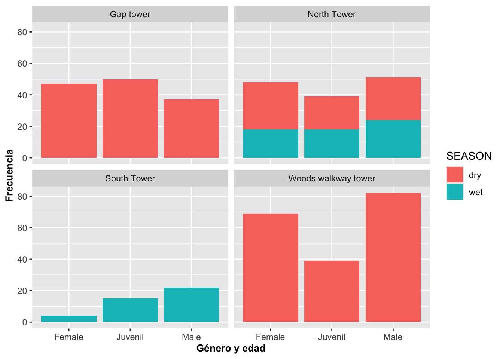
En el próximo gráfico se usa geom_point combinado con facet_wrap con las variables de tamaño de los Anolis y la altitud del lugar de muestreo en donde el lagarto fue encontrado.
barraC=ggplot(Anolis, aes(SVL, HEIGHT))
barraC+geom_point()+
facet_wrap(~Survey_Site)+
labs(y="Altura del muestreo")+
theme(axis.title=element_text(size=10,face="bold"))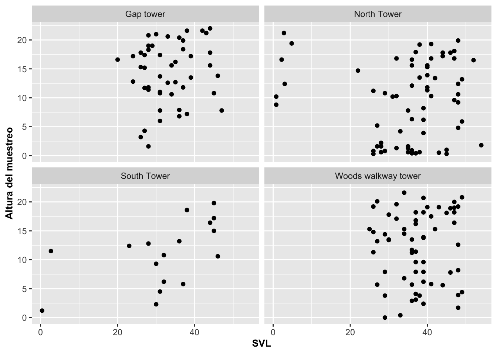
Para cambiar la cantidad de columnas o filas se usa nrow y ncol. En el ejemplo ponemos todos los gráficos en una fila con nrow igual a 1.
barraD=ggplot(Anolis, aes(SVL, HEIGHT))
barraD+geom_point()+
facet_wrap(~Survey_Site, nrow=1)+
labs(y="Altura sobre el suelo")+
theme(axis.title=element_text(size=10,face="bold"))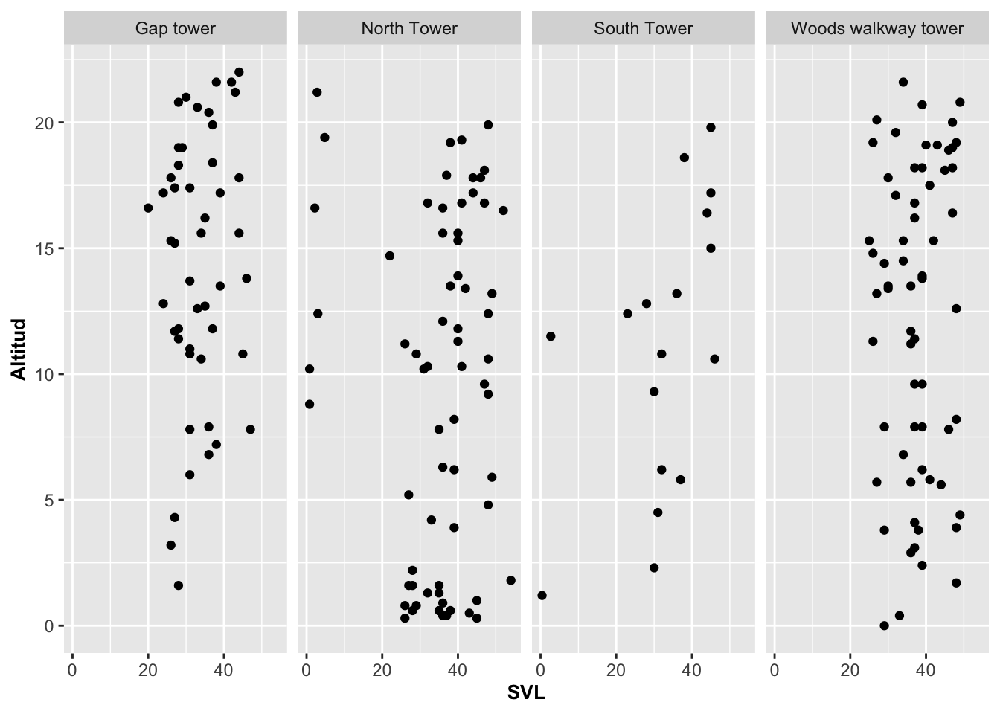
Por otro lado, en el próximo ejemplo reorganizamos los gráficos para que queden uno debajo de los otros en una columna con ncol igual a 1.
barraC=ggplot(Anolis, aes(SVL, HEIGHT))
barraC+geom_point()+
facet_wrap(~Survey_Site, ncol=1)+
labs(y="Altitud")+
theme(axis.title=element_text(size=10,face="bold"))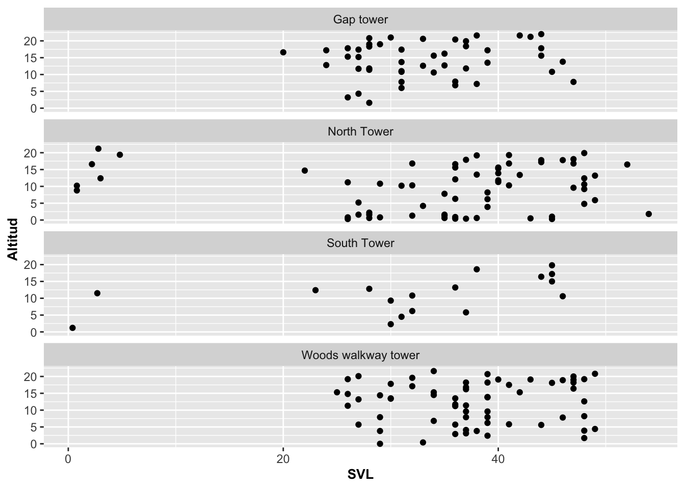
A veces queremos tener los gráficos por categoría sobre la misma columna ncol=1 pero que a la misma vez la escala de cada grupo se refleje de acuerdo a los datos. Note que en el gráfico anterior todas los gráficos tienen la misma escala de 0 a 60. Si queremos que las escalas en los ejes de X y Y queden ajustadas de acuerdo a los datos de cada grupo, se utiliza la opción y parámetro (scales=“free”) . Note en la Figura que ahora cada gráfico tiene su propria escala:
barraC=ggplot(Anolis, aes(SVL, HEIGHT))
barraC+geom_point()+
facet_wrap(~Survey_Site, ncol=1, scales="free")+
labs(y="Altitud")+
theme(axis.title=element_text(size=10,face="bold"))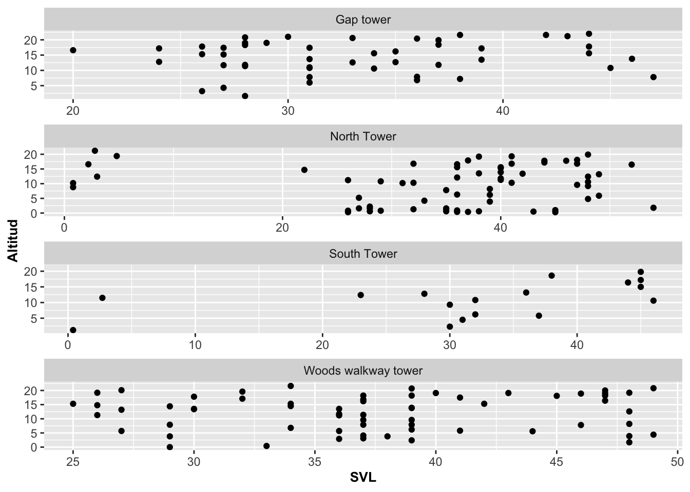
Podríamos también querer organizar los gráficos de acuerdo a múltiples variables categóricas mostrando así la agrupación de los datos. En el ejemplo se agrupan de acuerdo al sitio de muestreo (Gap, North, South o Woods) y al periodo del año (seco o mojado). De esta forma, se pueden producir gráficos agrupados por múltiples variables discretas. Note que lo único que se tuvo que hacer fue añadir ~variable1 + variable2; en nuestro caso, ~Survey_Site + SEASON.
barraE=ggplot(Anolis, aes(SVL, HEIGHT))
barraE+geom_point()+
facet_wrap(~Survey_Site+SEASON)+
labs(y="Altitud")+
theme(axis.title=element_text(size=10,face="bold"))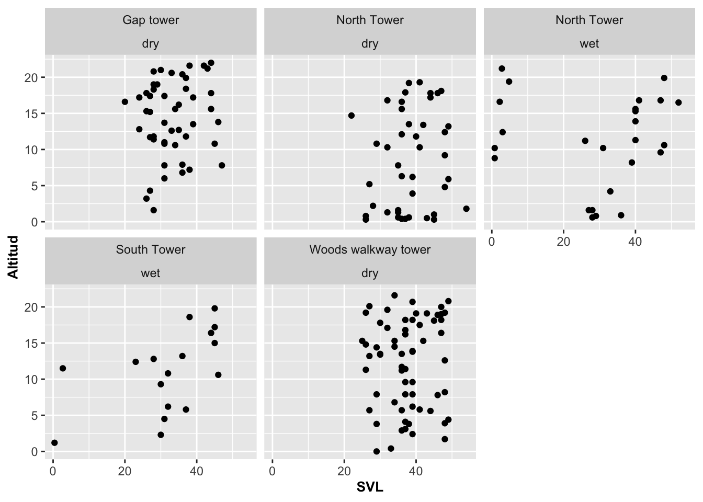
En el ejemplo que hemos estado mostrando hay localidades en que no hay datos, como en Gap Tower en la época lluviosa, en South Tower en la época seca, y en Woods Walkway Tower en la época lluviosa, y por eso no aparecen en la figura. Si queremos mostrar los gráficos de esos sitios donde no existe información, se usa la opción de drop = FALSE.
barraE=ggplot(Anolis, aes(SVL, HEIGHT))
barraE+geom_point()+
facet_wrap(~Survey_Site+SEASON,drop=FALSE, ncol=2)+
labs(y="Altitud")+
theme(axis.title=element_text(size=10,face="bold"))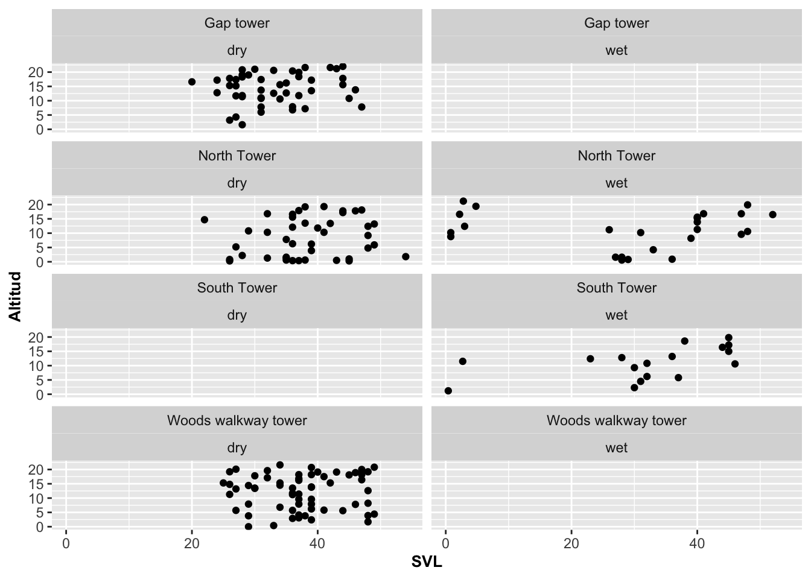
En la Figura anterior todos los graficos muestran la misma escala para cada uno. Para que cada uno tenga su propia escala, nuevamente usamos scales=free.
barraF=ggplot(Anolis, aes(SVL, HEIGHT))
barraF+geom_point()+
facet_wrap(~Survey_Site, scales="free")+
labs(y="Altitud")+
theme(axis.title=element_text(size=10,face="bold"))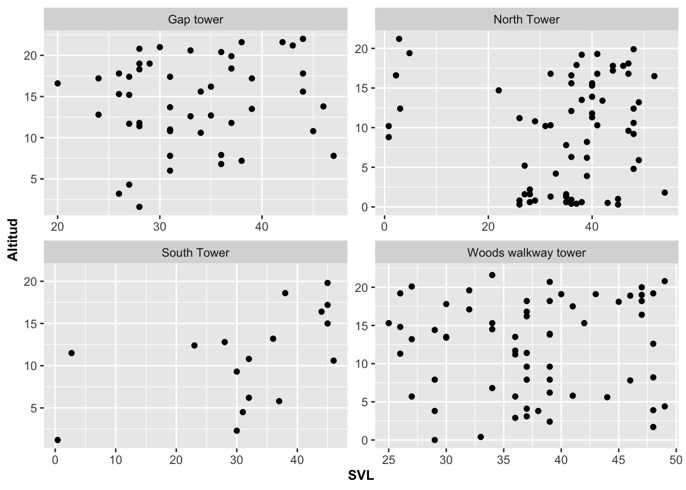
A veces puede ser más fácil interpretar los datos y la distribución de un grupo si estos están solapados con los datos de los otros grupos, especialmente si se usan colores diferentes por grupo. Una alternativa es graficar todos los datos en cada uno de los gráficos individuales, pero que los que no son del gráfico que no se quiere resaltar se muestren en un color más atenuado, mientras que los datos que se quieren resaltar salgan en un color más prominente. Para lograr ese efecto, a continuación se crea un nuevo data frame con data = transform(Anolis, Survey_Site = NULL) basándonos en el data frame anterior. Con la opción NULL estamos removiendo la variable que usamos para hacer el facetting; o sea, la distribución de datos por categoría, que en nuestro caso es Survey_Site. También se le añade un color diferente a los cuatro grupos. Note que el código para el color atenuado, en este caso grey85, tiene que escribirse antes del código que graficará la variable que queremos resaltar con color Survey_Site, ya que esta última estará en una capa superior y, a consecuencia, se esconderán algunos de los puntos de la capa inferior.
ggplot(Anolis, aes(x=SVL, y=HEIGHT, colour=Survey_Site))+
geom_point(data = transform(Anolis,
Survey_Site = NULL), colour = "grey85")+
geom_point()+
facet_wrap(~Survey_Site)+
labs(y="Altitud")+
theme(legend.position="none")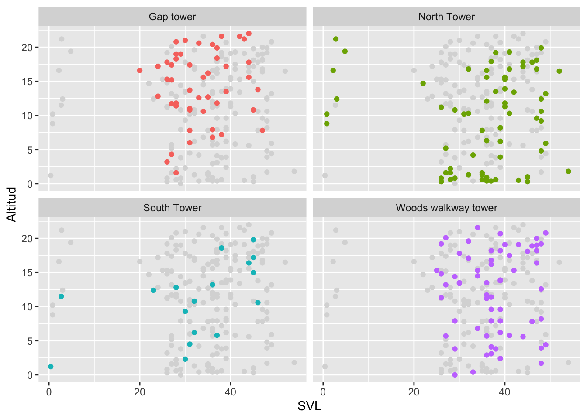
Para que el nombre de cada grupo salga debajo de cada gráfico en el eje de X, usar strip.position = “bottom”, “top”, “left”, “right”:
ggplot(Anolis, aes(x=SVL, y=HEIGHT, colour=Survey_Site))+
geom_point(data = transform(Anolis,
Survey_Site = NULL), colour = "grey85")+
geom_point()+
facet_wrap(~Survey_Site, strip.position = "bottom")+
labs(y="Altitud")+
theme(legend.position="none")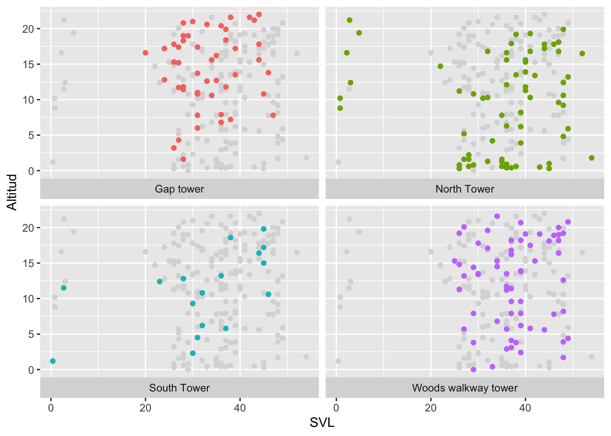
El nombre de cada grupo se cambia al eje de Y al usando la función switch=y.
ggplot(Anolis, aes(x=SVL, y=HEIGHT, colour=Survey_Site))+
geom_point(data = transform(Anolis,
Survey_Site = NULL), colour = "grey85")+
geom_point()+
facet_wrap(~Survey_Site, strip.position = "right")+
labs(y="Altitud")+
theme(legend.position="none")## Warning: Removed 1232 rows containing missing
## values or values outside the scale
## range (`geom_point()`).## Warning: Removed 308 rows containing missing
## values or values outside the scale
## range (`geom_point()`).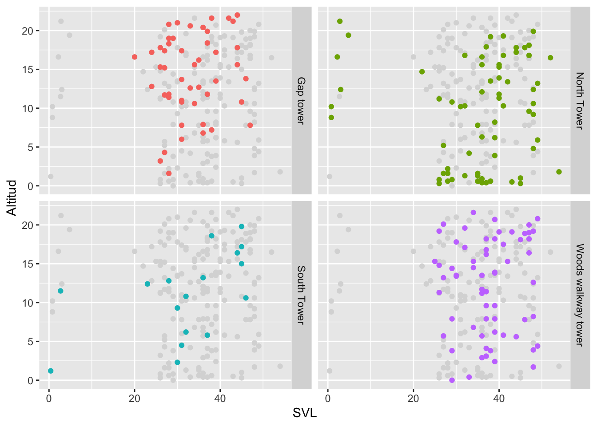
Facet_wrap se puede usar en combinación con todas las funciones tipo geom. A continuación se demostrará un ejemplo con geom_line. Para visualizar las ventajas de esa combinación, utilizaremos datos sobre las temperaturas mínimas diurnas de la ciudad de Morelia, Michoacán, México, disponible en CLIMCOM, http://clicom-mex.cicese.mx. Los datos del archivo original van de noviembre 1947 a marzo del 2012. A continuación solo se mostrarán del 1951 hasta el 1959. Note que aparecen todos los años juntos, lo que lo hace un poco difícil de analizar. Para reproducir este gráfico, primero hay que instalar y activar la librería lubridate que se usará para manipular los datos relacionados a las fechas. En el paquete lubridate se encuentra una serie de funciones para reorganizar y manipular datos de fechas y horas en distintos formatos. El segundo paso es seleccionar solamente los datos de interés con la opción with. El tercer paso es convertir los datos de fecha que estén en tres columnas, Mes, Dia y Year (o Año), y crear una columna de fecha donde la organización de la fecha es año-mes-día. El paso final es convertir la fecha al día del año (1-365).
Veamos las primeras filas del archivo, donde en la primera se muestra que en el 8 de octubre de 1947 la temperatura mínima fue de 11C°.
## Mes Dia Year Tmin
## 1 10 8 1947 11.0
## 2 10 9 1947 11.0
## 3 10 10 1947 9.0
## 4 10 11 1947 10.0
## 5 10 12 1947 12.0
## 6 10 13 1947 12.5Ahora se selecciona solamente parte de los datos, del 1 de enero del 1951 al 31 de diciembre del 1959.
## Mes Dia Year Tmin
## 1 1 1 1951 4.0
## 2 1 2 1951 10.0
## 3 1 3 1951 1.0
## 4 1 4 1951 1.0
## 5 1 5 1951 1.5
## 6 1 6 1951 3.0
## 7 1 7 1951 4.0
## 8 1 8 1951 4.0
## 9 1 9 1951 5.3
## 10 1 10 1951 2.0
## 11 1 11 1951 2.5
## 12 1 12 1951 3.5
## 13 1 13 1951 0.0
## 14 1 14 1951 1.7
## 15 1 15 1951 1.0
## 16 1 16 1951 0.0
## 17 1 17 1951 0.0
## 18 1 18 1951 1.5
## 19 1 19 1951 1.8
## 20 1 20 1951 2.0
## 21 1 21 1951 2.0
## 22 1 22 1951 3.0
## 23 1 23 1951 4.0
## 24 1 24 1951 3.0
## 25 1 25 1951 2.5
## 26 1 26 1951 3.0
## 27 1 27 1951 3.0
## 28 1 28 1951 4.0
## 29 1 29 1951 4.3
## 30 1 30 1951 4.5
## 31 1 31 1951 4.8
## 32 2 1 1951 3.0
## 33 2 2 1951 3.0
## 34 2 3 1951 0.0
## 35 2 4 1951 -0.2
## 36 2 5 1951 -1.5
## 37 2 6 1951 -1.0
## 38 2 7 1951 3.0
## 39 2 8 1951 2.0
## 40 2 9 1951 1.0
## 41 2 10 1951 1.0
## 42 2 11 1951 1.5
## 43 2 12 1951 1.8
## 44 2 13 1951 4.0
## 45 2 14 1951 2.0
## 46 2 15 1951 2.0
## 47 2 16 1951 2.5
## 48 2 17 1951 2.8
## 49 2 18 1951 3.8
## 50 2 19 1951 4.0
## 51 2 20 1951 3.0
## 52 2 21 1951 4.0
## 53 2 22 1951 5.5
## 54 2 23 1951 5.7
## 55 2 24 1951 6.0
## 56 2 25 1951 6.2
## 57 2 26 1951 7.0
## 58 2 27 1951 7.3
## 59 2 28 1951 7.5
## 60 3 1 1951 7.8
## 61 3 2 1951 8.0
## 62 3 3 1951 7.5
## 63 3 4 1951 6.5
## 64 3 5 1951 7.5
## 65 3 6 1951 6.0
## 66 3 7 1951 7.5
## 67 3 8 1951 8.0
## 68 3 9 1951 7.5
## 69 3 10 1951 6.5
## 70 3 11 1951 6.0
## 71 3 12 1951 6.5
## 72 3 13 1951 7.0
## 73 3 14 1951 6.5
## 74 3 15 1951 8.0
## 75 3 16 1951 6.5
## 76 3 17 1951 9.2
## 77 3 18 1951 10.0
## 78 3 19 1951 9.0
## 79 3 20 1951 10.1
## 80 3 21 1951 2.0
## 81 3 22 1951 4.0
## 82 3 23 1951 6.8
## 83 3 24 1951 6.9
## 84 3 25 1951 7.5
## 85 3 26 1951 7.8
## 86 3 27 1951 8.0
## 87 3 28 1951 8.2
## 88 3 29 1951 9.0
## 89 3 30 1951 8.9
## 90 3 31 1951 9.0
## 91 4 1 1951 1.7
## 92 4 2 1951 5.0
## 93 4 3 1951 9.0
## 94 4 4 1951 8.7
## 95 4 5 1951 9.0
## 96 4 6 1951 8.9
## 97 4 7 1951 4.8
## 98 4 8 1951 8.5
## 99 4 9 1951 11.0
## 100 4 10 1951 11.0
## 101 4 11 1951 9.8
## 102 4 12 1951 9.0
## 103 4 13 1951 9.0
## 104 4 14 1951 8.0
## 105 4 15 1951 7.8
## 106 4 16 1951 7.9
## 107 4 17 1951 8.0
## 108 4 18 1951 7.8
## 109 4 19 1951 7.9
## 110 4 20 1951 8.0
## 111 4 21 1951 9.5
## 112 4 22 1951 11.0
## 113 4 23 1951 12.0
## 114 4 24 1951 10.5
## 115 4 25 1951 10.4
## 116 4 26 1951 10.0
## 117 4 27 1951 8.5
## 118 4 28 1951 9.3
## 119 4 29 1951 10.5
## 120 4 30 1951 11.5
## 121 5 1 1951 8.5
## 122 5 2 1951 8.6
## 123 5 3 1951 13.0
## 124 5 4 1951 10.8
## 125 5 5 1951 9.0
## 126 5 6 1951 9.1
## 127 5 7 1951 9.5
## 128 5 8 1951 9.0
## 129 5 9 1951 10.5
## 130 5 10 1951 8.5
## 131 5 11 1951 8.8
## 132 5 12 1951 9.3
## 133 5 13 1951 8.6
## 134 5 14 1951 8.0
## 135 5 15 1951 12.0
## 136 5 16 1951 14.0
## 137 5 17 1951 12.8
## 138 5 18 1951 14.5
## 139 5 19 1951 13.6
## 140 5 20 1951 13.0
## 141 5 21 1951 11.8
## 142 5 22 1951 11.0
## 143 5 23 1951 14.0
## 144 5 24 1951 11.5
## 145 5 25 1951 9.5
## 146 5 26 1951 10.0
## 147 5 27 1951 10.2
## 148 5 28 1951 10.5
## 149 5 29 1951 10.5
## 150 5 30 1951 13.0
## 151 5 31 1951 12.8
## 152 6 1 1951 12.8
## 153 6 2 1951 15.0
## 154 6 3 1951 14.5
## 155 6 4 1951 12.0
## 156 6 5 1951 12.5
## 157 6 6 1951 14.5
## 158 6 7 1951 15.5
## 159 6 8 1951 13.0
## 160 6 9 1951 14.0
## 161 6 10 1951 17.0
## 162 6 11 1951 14.7
## 163 6 12 1951 11.8
## 164 6 13 1951 15.0
## 165 6 14 1951 14.0
## 166 6 15 1951 15.0
## 167 6 16 1951 12.0
## 168 6 17 1951 15.0
## 169 6 18 1951 13.0
## 170 6 19 1951 11.7
## 171 6 20 1951 15.0
## 172 6 21 1951 14.5
## 173 6 22 1951 13.5
## 174 6 23 1951 14.8
## 175 6 24 1951 14.0
## 176 6 25 1951 15.0
## 177 6 26 1951 15.6
## 178 6 27 1951 15.4
## 179 6 28 1951 14.0
## 180 6 29 1951 13.8
## 181 6 30 1951 14.2
## 182 7 1 1951 15.0
## 183 7 2 1951 14.5
## 184 7 3 1951 14.6
## 185 7 4 1951 15.0
## 186 7 5 1951 13.2
## 187 7 6 1951 14.0
## 188 7 7 1951 13.0
## 189 7 8 1951 13.2
## 190 7 9 1951 12.0
## 191 7 10 1951 13.5
## 192 7 11 1951 11.5
## 193 7 12 1951 14.8
## 194 7 13 1951 13.5
## 195 7 14 1951 12.8
## 196 7 15 1951 14.2
## 197 7 16 1951 11.0
## 198 7 17 1951 12.3
## 199 7 18 1951 12.0
## 200 7 19 1951 12.2
## 201 7 20 1951 12.1
## 202 7 21 1951 13.5
## 203 7 22 1951 12.0
## 204 7 23 1951 12.1
## 205 7 24 1951 13.5
## 206 7 25 1951 14.0
## 207 7 26 1951 11.1
## 208 7 27 1951 13.0
## 209 7 28 1951 12.1
## 210 7 29 1951 10.5
## 211 7 30 1951 12.5
## 212 7 31 1951 12.4
## 213 8 1 1951 14.0
## 214 8 2 1951 12.3
## 215 8 3 1951 14.5
## 216 8 4 1951 14.2
## 217 8 5 1951 11.8
## 218 8 6 1951 13.7
## 219 8 7 1951 12.0
## 220 8 8 1951 10.5
## 221 8 9 1951 12.0
## 222 8 10 1951 14.5
## 223 8 11 1951 13.5
## 224 8 12 1951 13.4
## 225 8 13 1951 10.0
## 226 8 14 1951 10.5
## 227 8 15 1951 14.5
## 228 8 16 1951 11.5
## 229 8 17 1951 14.0
## 230 8 18 1951 14.5
## 231 8 19 1951 11.5
## 232 8 20 1951 13.0
## 233 8 21 1951 13.2
## 234 8 22 1951 11.8
## 235 8 23 1951 13.0
## 236 8 24 1951 15.0
## 237 8 25 1951 14.3
## 238 8 26 1951 13.1
## 239 8 27 1951 11.4
## 240 8 28 1951 10.0
## 241 8 29 1951 12.8
## 242 8 30 1951 13.8
## 243 8 31 1951 15.0
## 244 9 1 1951 13.0
## 245 9 2 1951 13.6
## 246 9 3 1951 13.0
## 247 9 4 1951 14.0
## 248 9 5 1951 15.5
## 249 9 6 1951 14.0
## 250 9 7 1951 13.9
## 251 9 8 1951 14.0
## 252 9 9 1951 13.2
## 253 9 10 1951 14.0
## 254 9 11 1951 15.0
## 255 9 12 1951 15.2
## 256 9 13 1951 13.0
## 257 9 14 1951 14.2
## 258 9 15 1951 11.6
## 259 9 16 1951 13.3
## 260 9 17 1951 14.2
## 261 9 18 1951 11.6
## 262 9 19 1951 7.0
## 263 9 20 1951 6.0
## 264 9 21 1951 6.2
## 265 9 22 1951 9.8
## 266 9 23 1951 14.0
## 267 9 24 1951 14.3
## 268 9 25 1951 14.5
## 269 9 26 1951 15.0
## 270 9 27 1951 11.6
## 271 9 28 1951 10.2
## 272 9 29 1951 10.0
## 273 9 30 1951 10.5
## 274 10 1 1951 10.2
## 275 10 2 1951 10.5
## 276 10 3 1951 12.0
## 277 10 4 1951 11.8
## 278 10 5 1951 11.0
## 279 10 6 1951 11.5
## 280 10 7 1951 12.8
## 281 10 8 1951 10.1
## 282 10 9 1951 10.5
## 283 10 10 1951 5.5
## 284 10 11 1951 3.0
## 285 10 12 1951 1.5
## 286 10 13 1951 4.0
## 287 10 14 1951 6.3
## 288 10 15 1951 6.0
## 289 10 16 1951 6.5
## 290 10 17 1951 9.0
## 291 10 18 1951 11.0
## 292 10 19 1951 10.0
## 293 10 20 1951 6.7
## 294 10 21 1951 8.5
## 295 10 22 1951 7.3
## 296 10 23 1951 9.5
## 297 10 24 1951 12.8
## 298 10 25 1951 10.0
## 299 10 26 1951 11.0
## 300 10 27 1951 13.3
## 301 10 28 1951 13.3
## 302 10 29 1951 10.0
## 303 10 30 1951 9.4
## 304 10 31 1951 11.1
## 305 11 1 1951 11.7
## 306 11 2 1951 12.2
## 307 11 3 1951 13.3
## 308 11 4 1951 9.4
## 309 11 5 1951 9.4
## 310 11 6 1951 8.9
## 311 11 7 1951 10.6
## 312 11 8 1951 8.3
## 313 11 9 1951 8.3
## 314 11 10 1951 8.9
## 315 11 11 1951 6.7
## 316 11 12 1951 7.2
## 317 11 13 1951 8.3
## 318 11 14 1951 8.9
## 319 11 15 1951 9.4
## 320 11 16 1951 7.2
## 321 11 17 1951 7.8
## 322 11 18 1951 6.1
## 323 11 19 1951 6.1
## 324 11 20 1951 6.7
## 325 11 21 1951 7.2
## 326 11 22 1951 5.6
## 327 11 23 1951 2.2
## 328 11 24 1951 3.3
## 329 11 25 1951 5.0
## 330 11 26 1951 6.7
## 331 11 27 1951 9.4
## 332 11 28 1951 9.4
## 333 11 29 1951 8.9
## 334 11 30 1951 9.4
## 335 12 1 1951 10.6
## 336 12 2 1951 11.1
## 337 12 3 1951 8.3
## 338 12 4 1951 7.8
## 339 12 5 1951 5.6
## 340 12 6 1951 3.9
## 341 12 7 1951 1.7
## 342 12 8 1951 3.3
## 343 12 9 1951 3.0
## 344 12 10 1951 6.1
## 345 12 11 1951 6.5
## 346 12 12 1951 5.6
## 347 12 13 1951 6.2
## 348 12 14 1951 7.8
## 349 12 15 1951 5.6
## 350 12 16 1951 6.7
## 351 12 17 1951 5.6
## 352 12 18 1951 5.0
## 353 12 19 1951 5.6
## 354 12 20 1951 6.1
## 355 12 21 1951 4.4
## 356 12 22 1951 5.0
## 357 12 23 1951 5.0
## 358 12 24 1951 5.6
## 359 12 25 1951 6.1
## 360 12 26 1951 5.6
## 361 12 27 1951 6.1
## 362 12 28 1951 5.6
## 363 12 29 1951 5.6
## 364 12 30 1951 3.9
## 365 12 31 1951 5.0
## 366 1 1 1952 2.8
## 367 1 2 1952 2.8
## 368 1 3 1952 3.9
## 369 1 4 1952 3.9
## 370 1 5 1952 3.9
## 371 1 6 1952 3.3
## 372 1 7 1952 3.3
## 373 1 8 1952 4.0
## 374 1 9 1952 5.6
## 375 1 10 1952 6.1
## 376 1 11 1952 2.2
## 377 1 12 1952 2.8
## 378 1 13 1952 3.0
## 379 1 14 1952 5.6
## 380 1 15 1952 6.1
## 381 1 16 1952 5.0
## 382 1 17 1952 5.0
## 383 1 18 1952 4.4
## 384 1 19 1952 4.4
## 385 1 20 1952 4.0
## 386 1 21 1952 4.4
## 387 1 22 1952 3.3
## 388 1 23 1952 5.0
## 389 1 24 1952 5.0
## 390 1 25 1952 5.0
## 391 1 26 1952 5.6
## 392 1 27 1952 5.6
## 393 1 28 1952 5.0
## 394 1 29 1952 2.2
## 395 1 30 1952 2.8
## 396 1 31 1952 7.2
## 397 2 1 1952 6.7
## 398 2 2 1952 2.2
## 399 2 3 1952 1.1
## 400 2 4 1952 2.2
## 401 2 5 1952 0.6
## 402 2 6 1952 2.2
## 403 2 7 1952 0.0
## 404 2 8 1952 3.9
## 405 2 9 1952 0.0
## 406 2 10 1952 2.8
## 407 2 11 1952 3.3
## 408 2 12 1952 7.0
## 409 2 13 1952 7.8
## 410 2 14 1952 6.1
## 411 2 15 1952 6.7
## 412 2 16 1952 5.0
## 413 2 17 1952 5.0
## 414 2 18 1952 3.9
## 415 2 19 1952 4.4
## 416 2 20 1952 3.9
## 417 2 21 1952 3.9
## 418 2 22 1952 4.4
## 419 2 23 1952 4.4
## 420 2 24 1952 6.7
## 421 2 25 1952 8.3
## 422 2 26 1952 7.8
## 423 2 27 1952 3.3
## 424 2 28 1952 5.6
## 425 2 29 1952 5.6
## 426 3 1 1952 6.7
## 427 3 2 1952 6.1
## 428 3 3 1952 6.7
## 429 3 4 1952 8.9
## 430 3 5 1952 6.1
## 431 3 6 1952 6.7
## 432 3 7 1952 4.4
## 433 3 8 1952 5.6
## 434 3 9 1952 8.0
## 435 3 10 1952 10.0
## 436 3 11 1952 5.6
## 437 3 12 1952 6.1
## 438 3 13 1952 6.7
## 439 3 14 1952 7.8
## 440 3 15 1952 8.3
## 441 3 16 1952 9.4
## 442 3 17 1952 9.4
## 443 3 18 1952 10.6
## 444 3 19 1952 5.6
## 445 3 20 1952 5.6
## 446 3 21 1952 8.9
## 447 3 22 1952 9.4
## 448 3 23 1952 7.8
## 449 3 24 1952 10.0
## 450 3 25 1952 8.3
## 451 3 26 1952 5.6
## 452 3 27 1952 7.2
## 453 3 28 1952 6.1
## 454 3 29 1952 5.6
## 455 3 30 1952 6.7
## 456 3 31 1952 8.9
## 457 4 1 1952 9.4
## 458 4 2 1952 10.0
## 459 4 3 1952 12.2
## 460 4 4 1952 10.0
## 461 4 5 1952 12.2
## 462 4 6 1952 11.1
## 463 4 7 1952 7.8
## 464 4 8 1952 10.0
## 465 4 9 1952 10.1
## 466 4 10 1952 7.8
## 467 4 11 1952 11.0
## 468 4 12 1952 9.4
## 469 4 13 1952 10.0
## 470 4 14 1952 8.9
## 471 4 15 1952 10.0
## 472 4 16 1952 11.1
## 473 4 17 1952 13.3
## 474 4 18 1952 12.8
## 475 4 19 1952 11.1
## 476 4 20 1952 10.6
## 477 4 21 1952 10.0
## 478 4 22 1952 11.7
## 479 4 23 1952 9.4
## 480 4 24 1952 10.0
## 481 4 25 1952 10.6
## 482 4 26 1952 8.9
## 483 4 27 1952 9.4
## 484 4 28 1952 10.0
## 485 4 29 1952 10.6
## 486 4 30 1952 12.8
## 487 5 1 1952 13.3
## 488 5 2 1952 11.1
## 489 5 3 1952 8.3
## 490 5 4 1952 10.0
## 491 5 5 1952 10.6
## 492 5 6 1952 11.1
## 493 5 7 1952 10.0
## 494 5 8 1952 11.7
## 495 5 9 1952 11.1
## 496 5 10 1952 12.8
## 497 5 11 1952 12.2
## 498 5 12 1952 11.7
## 499 5 13 1952 13.3
## 500 5 14 1952 12.2
## 501 5 15 1952 11.4
## 502 5 16 1952 12.8
## 503 5 17 1952 11.7
## 504 5 18 1952 10.0
## 505 5 19 1952 10.6
## 506 5 20 1952 13.3
## 507 5 21 1952 12.8
## 508 5 22 1952 13.3
## 509 5 23 1952 16.7
## 510 5 24 1952 14.4
## 511 5 25 1952 15.6
## 512 5 26 1952 12.2
## 513 5 27 1952 14.0
## 514 5 28 1952 13.2
## 515 5 29 1952 13.3
## 516 5 30 1952 15.6
## 517 5 31 1952 15.0
## 518 6 1 1952 15.6
## 519 6 2 1952 15.0
## 520 6 3 1952 12.2
## 521 6 4 1952 15.0
## 522 6 5 1952 13.3
## 523 6 6 1952 15.6
## 524 6 7 1952 16.1
## 525 6 8 1952 14.4
## 526 6 9 1952 11.1
## 527 6 10 1952 11.7
## 528 6 11 1952 13.3
## 529 6 12 1952 16.1
## 530 6 13 1952 13.9
## 531 6 14 1952 15.6
## 532 6 15 1952 14.4
## 533 6 16 1952 13.9
## 534 6 17 1952 13.3
## 535 6 18 1952 15.6
## 536 6 19 1952 14.4
## 537 6 20 1952 15.0
## 538 6 21 1952 16.7
## 539 6 22 1952 13.3
## 540 6 23 1952 15.0
## 541 6 24 1952 14.4
## 542 6 25 1952 13.9
## 543 6 26 1952 14.4
## 544 6 27 1952 11.1
## 545 6 28 1952 14.4
## 546 6 29 1952 15.0
## 547 6 30 1952 15.6
## 548 7 1 1952 4.4
## 549 7 2 1952 5.0
## 550 7 3 1952 7.8
## 551 7 4 1952 5.6
## 552 7 5 1952 7.8
## 553 7 6 1952 7.8
## 554 7 7 1952 5.6
## 555 7 8 1952 3.9
## 556 7 9 1952 5.6
## 557 7 10 1952 5.6
## 558 7 11 1952 5.0
## 559 7 12 1952 4.4
## 560 7 13 1952 6.1
## 561 7 14 1952 5.6
## 562 7 15 1952 6.7
## 563 7 16 1952 5.0
## 564 7 17 1952 5.6
## 565 7 18 1952 7.8
## 566 7 19 1952 6.1
## 567 7 20 1952 5.6
## 568 7 21 1952 5.6
## 569 7 22 1952 14.4
## 570 7 23 1952 13.9
## 571 7 24 1952 13.9
## 572 7 25 1952 13.3
## 573 7 26 1952 13.3
## 574 7 27 1952 12.8
## 575 7 28 1952 12.2
## 576 7 29 1952 13.3
## 577 7 30 1952 11.1
## 578 7 31 1952 12.2
## 579 8 1 1952 11.7
## 580 8 2 1952 12.2
## 581 8 3 1952 13.3
## 582 8 4 1952 11.7
## 583 8 5 1952 10.6
## 584 8 6 1952 12.2
## 585 8 7 1952 11.7
## 586 8 8 1952 11.1
## 587 8 9 1952 12.2
## 588 8 10 1952 11.1
## 589 8 11 1952 11.7
## 590 8 12 1952 14.0
## 591 8 13 1952 12.8
## 592 8 14 1952 13.9
## 593 8 15 1952 14.4
## 594 8 16 1952 13.3
## 595 8 17 1952 14.4
## 596 8 18 1952 13.9
## 597 8 19 1952 13.3
## 598 8 20 1952 12.8
## 599 8 21 1952 12.2
## 600 8 22 1952 13.3
## 601 8 23 1952 11.7
## 602 8 24 1952 13.9
## 603 8 25 1952 13.3
## 604 8 26 1952 13.9
## 605 8 27 1952 13.3
## 606 8 28 1952 11.1
## 607 8 29 1952 12.8
## 608 8 30 1952 13.3
## 609 8 31 1952 15.6
## 610 9 1 1952 13.3
## 611 9 2 1952 12.2
## 612 9 3 1952 12.8
## 613 9 4 1952 11.7
## 614 9 5 1952 12.8
## 615 9 6 1952 13.3
## 616 9 7 1952 11.1
## 617 9 8 1952 12.2
## 618 9 9 1952 14.4
## 619 9 10 1952 13.3
## 620 9 11 1952 11.7
## 621 9 12 1952 12.8
## 622 9 13 1952 11.7
## 623 9 14 1952 12.8
## 624 9 15 1952 13.9
## 625 9 16 1952 13.3
## 626 9 17 1952 13.9
## 627 9 18 1952 12.8
## 628 9 19 1952 13.3
## 629 9 20 1952 13.3
## 630 9 21 1952 10.0
## 631 9 22 1952 8.9
## 632 9 23 1952 10.0
## 633 9 24 1952 13.3
## 634 9 25 1952 12.8
## 635 9 26 1952 12.2
## 636 9 27 1952 13.3
## 637 9 28 1952 13.9
## 638 9 29 1952 13.3
## 639 9 30 1952 14.4
## 640 10 1 1952 13.9
## 641 10 2 1952 13.9
## 642 10 3 1952 10.0
## 643 10 4 1952 8.9
## 644 10 5 1952 9.4
## 645 10 6 1952 9.4
## 646 10 7 1952 10.0
## 647 10 8 1952 7.8
## 648 10 9 1952 10.0
## 649 10 10 1952 10.6
## 650 10 11 1952 6.1
## 651 10 12 1952 1.7
## 652 10 13 1952 1.7
## 653 10 14 1952 5.0
## 654 10 15 1952 6.7
## 655 10 16 1952 5.0
## 656 10 17 1952 1.7
## 657 10 18 1952 0.6
## 658 10 19 1952 0.6
## 659 10 20 1952 0.6
## 660 10 21 1952 0.6
## 661 10 22 1952 0.6
## 662 10 23 1952 1.7
## 663 10 24 1952 1.7
## 664 10 25 1952 2.8
## 665 10 26 1952 2.2
## 666 10 27 1952 1.1
## 667 10 28 1952 0.0
## 668 10 29 1952 0.0
## 669 10 30 1952 1.7
## 670 10 31 1952 1.7
## 671 11 1 1952 2.2
## 672 11 2 1952 5.0
## 673 11 3 1952 7.2
## 674 11 4 1952 9.4
## 675 11 5 1952 10.6
## 676 11 6 1952 10.6
## 677 11 7 1952 10.6
## 678 11 8 1952 11.7
## 679 11 9 1952 10.6
## 680 11 10 1952 11.1
## 681 11 11 1952 8.9
## 682 11 12 1952 10.0
## 683 11 13 1952 12.8
## 684 11 14 1952 7.2
## 685 11 15 1952 10.6
## 686 11 16 1952 8.3
## 687 11 17 1952 9.4
## 688 11 18 1952 10.0
## 689 11 19 1952 7.8
## 690 11 20 1952 8.9
## 691 11 21 1952 9.4
## 692 11 22 1952 6.7
## 693 11 23 1952 6.7
## 694 11 24 1952 6.7
## 695 11 25 1952 5.6
## 696 11 26 1952 6.7
## 697 11 27 1952 5.6
## 698 11 28 1952 7.2
## 699 11 29 1952 3.9
## 700 11 30 1952 2.8
## 701 12 1 1952 4.4
## 702 12 2 1952 5.0
## 703 12 3 1952 6.7
## 704 12 4 1952 3.9
## 705 12 5 1952 5.1
## 706 12 6 1952 0.6
## 707 12 7 1952 1.6
## 708 12 8 1952 4.0
## 709 12 9 1952 6.1
## 710 12 10 1952 6.1
## 711 12 11 1952 5.0
## 712 12 12 1952 3.9
## 713 12 13 1952 -0.6
## 714 12 14 1952 -4.4
## 715 12 15 1952 -1.1
## 716 12 16 1952 5.0
## 717 12 17 1952 4.4
## 718 12 18 1952 5.0
## 719 12 19 1952 3.9
## 720 12 20 1952 2.8
## 721 12 21 1952 3.9
## 722 12 22 1952 5.0
## 723 12 23 1952 2.8
## 724 12 24 1952 3.9
## 725 12 25 1952 3.9
## 726 12 26 1952 5.0
## 727 12 27 1952 3.9
## 728 12 28 1952 5.0
## 729 12 29 1952 5.6
## 730 12 30 1952 9.4
## 731 12 31 1952 5.0
## 732 1 1 1953 2.8
## 733 1 2 1953 2.2
## 734 1 3 1953 3.3
## 735 1 4 1953 2.2
## 736 1 5 1953 2.8
## 737 1 6 1953 3.9
## 738 1 7 1953 3.9
## 739 1 8 1953 5.6
## 740 1 9 1953 2.2
## 741 1 10 1953 1.7
## 742 1 11 1953 -2.2
## 743 1 12 1953 -1.1
## 744 1 13 1953 -2.2
## 745 1 14 1953 -2.2
## 746 1 15 1953 -0.6
## 747 1 16 1953 2.8
## 748 1 17 1953 2.2
## 749 1 18 1953 3.9
## 750 1 19 1953 4.4
## 751 1 20 1953 5.0
## 752 1 21 1953 4.4
## 753 1 22 1953 3.9
## 754 1 23 1953 3.3
## 755 1 24 1953 0.0
## 756 1 25 1953 0.0
## 757 1 26 1953 0.0
## 758 1 27 1953 -1.1
## 759 1 28 1953 1.1
## 760 1 29 1953 0.0
## 761 1 30 1953 1.1
## 762 1 31 1953 1.1
## 763 2 1 1953 1.1
## 764 2 2 1953 0.3
## 765 2 3 1953 1.1
## 766 2 4 1953 1.1
## 767 2 5 1953 2.2
## 768 2 6 1953 3.9
## 769 2 7 1953 3.9
## 770 2 8 1953 4.4
## 771 2 9 1953 4.4
## 772 2 10 1953 3.3
## 773 2 11 1953 3.3
## 774 2 12 1953 6.1
## 775 2 13 1953 8.9
## 776 2 14 1953 10.0
## 777 2 15 1953 3.3
## 778 2 16 1953 4.4
## 779 2 17 1953 6.1
## 780 2 18 1953 5.6
## 781 2 19 1953 7.2
## 782 2 20 1953 7.2
## 783 2 21 1953 7.2
## 784 2 22 1953 7.8
## 785 2 23 1953 7.8
## 786 2 24 1953 7.8
## 787 2 25 1953 7.2
## 788 2 26 1953 8.9
## 789 2 27 1953 7.8
## 790 2 28 1953 8.9
## 791 3 1 1953 7.8
## 792 3 2 1953 6.7
## 793 3 3 1953 7.8
## 794 3 4 1953 6.7
## 795 3 5 1953 7.8
## 796 3 6 1953 7.8
## 797 3 7 1953 8.9
## 798 3 8 1953 7.8
## 799 3 9 1953 6.1
## 800 3 10 1953 6.7
## 801 3 11 1953 10.6
## 802 3 12 1953 11.1
## 803 3 13 1953 11.7
## 804 3 14 1953 11.1
## 805 3 15 1953 11.1
## 806 3 16 1953 11.7
## 807 3 17 1953 8.9
## 808 3 18 1953 7.8
## 809 3 19 1953 7.8
## 810 3 20 1953 8.3
## 811 3 21 1953 0.6
## 812 3 22 1953 5.6
## 813 3 23 1953 3.9
## 814 3 24 1953 3.9
## 815 3 25 1953 8.9
## 816 3 26 1953 10.6
## 817 3 27 1953 11.1
## 818 3 28 1953 10.0
## 819 3 29 1953 7.8
## 820 3 30 1953 8.9
## 821 3 31 1953 10.0
## 822 4 1 1953 6.9
## 823 4 2 1953 6.1
## 824 4 3 1953 6.7
## 825 4 4 1953 7.2
## 826 4 5 1953 8.3
## 827 4 6 1953 6.7
## 828 4 7 1953 11.1
## 829 4 8 1953 8.3
## 830 4 9 1953 8.9
## 831 4 10 1953 8.9
## 832 4 11 1953 8.9
## 833 4 12 1953 8.3
## 834 4 13 1953 6.7
## 835 4 14 1953 10.0
## 836 4 15 1953 7.8
## 837 4 16 1953 6.7
## 838 4 17 1953 6.1
## 839 4 18 1953 6.7
## 840 4 19 1953 7.8
## 841 4 20 1953 8.9
## 842 4 21 1953 8.9
## 843 4 22 1953 9.4
## 844 4 23 1953 10.0
## 845 4 24 1953 10.0
## 846 4 25 1953 10.0
## 847 4 26 1953 10.0
## 848 4 27 1953 8.9
## 849 4 28 1953 9.4
## 850 4 29 1953 6.1
## 851 4 30 1953 6.7
## 852 5 1 1953 7.8
## 853 5 2 1953 8.9
## 854 5 3 1953 7.2
## 855 5 4 1953 7.8
## 856 5 5 1953 9.4
## 857 5 6 1953 7.8
## 858 5 7 1953 8.3
## 859 5 8 1953 7.8
## 860 5 9 1953 8.9
## 861 5 10 1953 9.4
## 862 5 11 1953 10.0
## 863 5 12 1953 11.7
## 864 5 13 1953 10.0
## 865 5 14 1953 11.1
## 866 5 15 1953 11.1
## 867 5 16 1953 7.8
## 868 5 17 1953 6.7
## 869 5 18 1953 10.0
## 870 5 19 1953 12.2
## 871 5 20 1953 13.3
## 872 5 21 1953 14.4
## 873 5 22 1953 14.4
## 874 5 23 1953 13.3
## 875 5 24 1953 12.2
## 876 5 25 1953 14.4
## 877 5 26 1953 12.8
## 878 5 27 1953 14.4
## 879 5 28 1953 13.9
## 880 5 29 1953 14.4
## 881 5 30 1953 13.9
## 882 5 31 1953 16.1
## 883 6 1 1953 16.7
## 884 6 2 1953 13.3
## 885 6 3 1953 12.8
## 886 6 4 1953 14.4
## 887 6 5 1953 13.3
## 888 6 6 1953 16.1
## 889 6 7 1953 14.4
## 890 6 8 1953 15.6
## 891 6 9 1953 14.4
## 892 6 10 1953 15.6
## 893 6 11 1953 11.1
## 894 6 12 1953 11.7
## 895 6 13 1953 13.9
## 896 6 14 1953 15.6
## 897 6 15 1953 13.9
## 898 6 16 1953 15.6
## 899 6 17 1953 13.3
## 900 6 18 1953 13.9
## 901 6 19 1953 15.6
## 902 6 20 1953 15.6
## 903 6 21 1953 12.8
## 904 6 22 1953 12.2
## 905 6 23 1953 12.2
## 906 6 24 1953 12.8
## 907 6 25 1953 13.3
## 908 6 26 1953 16.1
## 909 6 27 1953 14.4
## 910 6 28 1953 13.9
## 911 6 29 1953 14.4
## 912 6 30 1953 12.8
## 913 7 1 1953 15.0
## 914 7 2 1953 15.6
## 915 7 3 1953 13.9
## 916 7 4 1953 13.9
## 917 7 5 1953 12.2
## 918 7 6 1953 14.4
## 919 7 7 1953 14.4
## 920 7 8 1953 11.1
## 921 7 9 1953 12.8
## 922 7 10 1953 13.9
## 923 7 11 1953 15.0
## 924 7 12 1953 12.2
## 925 7 13 1953 12.8
## 926 7 14 1953 12.8
## 927 7 15 1953 11.7
## 928 7 16 1953 11.7
## 929 7 17 1953 13.3
## 930 7 18 1953 13.9
## 931 7 19 1953 13.3
## 932 7 20 1953 13.3
## 933 7 21 1953 13.3
## 934 7 22 1953 11.1
## 935 7 23 1953 12.8
## 936 7 24 1953 11.7
## 937 7 25 1953 13.9
## 938 7 26 1953 13.9
## 939 7 27 1953 13.9
## 940 7 28 1953 11.1
## 941 7 29 1953 14.4
## 942 7 30 1953 12.8
## 943 7 31 1953 14.4
## 944 8 1 1953 14.4
## 945 8 2 1953 11.7
## 946 8 3 1953 12.2
## 947 8 4 1953 13.3
## 948 8 5 1953 13.9
## 949 8 6 1953 14.0
## 950 8 7 1953 12.8
## 951 8 8 1953 11.7
## 952 8 9 1953 13.9
## 953 8 10 1953 12.2
## 954 8 11 1953 12.8
## 955 8 12 1953 12.8
## 956 8 13 1953 12.8
## 957 8 14 1953 11.1
## 958 8 15 1953 11.7
## 959 8 16 1953 12.8
## 960 8 17 1953 12.2
## 961 8 18 1953 12.2
## 962 8 19 1953 13.9
## 963 8 20 1953 14.4
## 964 8 21 1953 12.2
## 965 8 22 1953 12.8
## 966 8 23 1953 13.3
## 967 8 24 1953 14.0
## 968 8 25 1953 15.0
## 969 8 26 1953 13.9
## 970 8 27 1953 14.4
## 971 8 28 1953 12.8
## 972 8 29 1953 12.8
## 973 8 30 1953 13.3
## 974 8 31 1953 13.0
## 975 9 1 1953 13.9
## 976 9 2 1953 12.8
## 977 9 3 1953 12.8
## 978 9 4 1953 12.8
## 979 9 5 1953 11.1
## 980 9 6 1953 11.7
## 981 9 7 1953 10.6
## 982 9 8 1953 6.1
## 983 9 9 1953 7.8
## 984 9 10 1953 10.6
## 985 9 11 1953 12.2
## 986 9 12 1953 13.3
## 987 9 13 1953 13.3
## 988 9 14 1953 13.3
## 989 9 15 1953 13.9
## 990 9 16 1953 11.7
## 991 9 17 1953 10.6
## 992 9 18 1953 14.4
## 993 9 19 1953 12.8
## 994 9 20 1953 13.3
## 995 9 21 1953 6.7
## 996 9 22 1953 9.4
## 997 9 23 1953 6.7
## 998 9 24 1953 6.7
## 999 9 25 1953 6.7
## 1000 9 26 1953 6.7
## 1001 9 27 1953 6.7
## 1002 9 28 1953 6.1
## 1003 9 29 1953 6.0
## 1004 9 30 1953 10.6
## 1005 10 1 1953 NA
## 1006 10 2 1953 NA
## 1007 10 3 1953 NA
## 1008 10 4 1953 NA
## 1009 10 5 1953 NA
## 1010 10 6 1953 NA
## 1011 10 7 1953 NA
## 1012 10 8 1953 NA
## 1013 10 9 1953 NA
## 1014 10 10 1953 NA
## 1015 10 11 1953 NA
## 1016 10 12 1953 NA
## 1017 10 13 1953 NA
## 1018 10 14 1953 NA
## 1019 10 15 1953 NA
## 1020 10 16 1953 NA
## 1021 10 17 1953 NA
## 1022 10 18 1953 NA
## 1023 10 19 1953 NA
## 1024 10 20 1953 NA
## 1025 10 21 1953 NA
## 1026 10 22 1953 NA
## 1027 10 23 1953 NA
## 1028 10 24 1953 NA
## 1029 10 25 1953 NA
## 1030 10 26 1953 NA
## 1031 10 27 1953 NA
## 1032 10 28 1953 NA
## 1033 10 29 1953 NA
## 1034 10 30 1953 NA
## 1035 10 31 1953 NA
## 1036 11 1 1953 10.0
## 1037 11 2 1953 8.9
## 1038 11 3 1953 10.0
## 1039 11 4 1953 9.4
## 1040 11 5 1953 7.8
## 1041 11 6 1953 6.7
## 1042 11 7 1953 10.0
## 1043 11 8 1953 9.4
## 1044 11 9 1953 7.2
## 1045 11 10 1953 0.0
## 1046 11 11 1953 1.7
## 1047 11 12 1953 1.1
## 1048 11 13 1953 1.7
## 1049 11 14 1953 3.9
## 1050 11 15 1953 2.2
## 1051 11 16 1953 1.1
## 1052 11 17 1953 4.4
## 1053 11 18 1953 6.1
## 1054 11 19 1953 7.2
## 1055 11 20 1953 4.4
## 1056 11 21 1953 5.0
## 1057 11 22 1953 4.4
## 1058 11 23 1953 6.1
## 1059 11 24 1953 6.7
## 1060 11 25 1953 6.1
## 1061 11 26 1953 7.8
## 1062 11 27 1953 1.7
## 1063 11 28 1953 2.2
## 1064 11 29 1953 4.4
## 1065 11 30 1953 3.3
## 1066 12 1 1953 3.9
## 1067 12 2 1953 4.4
## 1068 12 3 1953 3.9
## 1069 12 4 1953 9.4
## 1070 12 5 1953 10.0
## 1071 12 6 1953 9.4
## 1072 12 7 1953 7.8
## 1073 12 8 1953 6.7
## 1074 12 9 1953 3.9
## 1075 12 10 1953 5.0
## 1076 12 11 1953 10.0
## 1077 12 12 1953 7.8
## 1078 12 13 1953 2.2
## 1079 12 14 1953 0.6
## 1080 12 15 1953 -1.1
## 1081 12 16 1953 -1.7
## 1082 12 17 1953 0.6
## 1083 12 18 1953 2.2
## 1084 12 19 1953 5.0
## 1085 12 20 1953 0.6
## 1086 12 21 1953 1.1
## 1087 12 22 1953 0.6
## 1088 12 23 1953 1.1
## 1089 12 24 1953 5.0
## 1090 12 25 1953 6.7
## 1091 12 26 1953 7.8
## 1092 12 27 1953 5.6
## 1093 12 28 1953 6.7
## 1094 12 29 1953 5.6
## 1095 12 30 1953 4.4
## 1096 12 31 1953 6.1
## 1097 1 1 1954 4.4
## 1098 1 2 1954 3.9
## 1099 1 3 1954 1.7
## 1100 1 4 1954 0.6
## 1101 1 5 1954 0.6
## 1102 1 6 1954 2.2
## 1103 1 7 1954 1.1
## 1104 1 8 1954 1.1
## 1105 1 9 1954 0.0
## 1106 1 10 1954 0.6
## 1107 1 11 1954 1.1
## 1108 1 12 1954 1.7
## 1109 1 13 1954 2.8
## 1110 1 14 1954 2.8
## 1111 1 15 1954 0.0
## 1112 1 16 1954 1.7
## 1113 1 17 1954 4.4
## 1114 1 18 1954 3.3
## 1115 1 19 1954 5.0
## 1116 1 20 1954 4.4
## 1117 1 21 1954 4.4
## 1118 1 22 1954 3.9
## 1119 1 23 1954 3.9
## 1120 1 24 1954 5.0
## 1121 1 25 1954 4.4
## 1122 1 26 1954 5.0
## 1123 1 27 1954 4.4
## 1124 1 28 1954 2.8
## 1125 1 29 1954 3.9
## 1126 1 30 1954 5.0
## 1127 1 31 1954 4.4
## 1128 2 1 1954 4.4
## 1129 2 2 1954 4.4
## 1130 2 3 1954 5.6
## 1131 2 4 1954 4.4
## 1132 2 5 1954 6.1
## 1133 2 6 1954 6.7
## 1134 2 7 1954 6.1
## 1135 2 8 1954 5.6
## 1136 2 9 1954 4.4
## 1137 2 10 1954 5.6
## 1138 2 11 1954 6.7
## 1139 2 12 1954 7.8
## 1140 2 13 1954 7.8
## 1141 2 14 1954 7.8
## 1142 2 15 1954 8.3
## 1143 2 16 1954 6.7
## 1144 2 17 1954 8.3
## 1145 2 18 1954 7.8
## 1146 2 19 1954 6.7
## 1147 2 20 1954 6.1
## 1148 2 21 1954 7.8
## 1149 2 22 1954 6.1
## 1150 2 23 1954 7.8
## 1151 2 24 1954 5.6
## 1152 2 25 1954 5.6
## 1153 2 26 1954 5.6
## 1154 2 27 1954 5.6
## 1155 2 28 1954 1.1
## 1156 3 1 1954 2.2
## 1157 3 2 1954 2.8
## 1158 3 3 1954 2.8
## 1159 3 4 1954 2.2
## 1160 3 5 1954 4.4
## 1161 3 6 1954 10.0
## 1162 3 7 1954 9.4
## 1163 3 8 1954 10.0
## 1164 3 9 1954 2.2
## 1165 3 10 1954 1.7
## 1166 3 11 1954 3.9
## 1167 3 12 1954 5.6
## 1168 3 13 1954 5.6
## 1169 3 14 1954 6.1
## 1170 3 15 1954 6.7
## 1171 3 16 1954 7.8
## 1172 3 17 1954 7.8
## 1173 3 18 1954 7.2
## 1174 3 19 1954 7.8
## 1175 3 20 1954 8.3
## 1176 3 21 1954 8.9
## 1177 3 22 1954 10.0
## 1178 3 23 1954 11.1
## 1179 3 24 1954 10.0
## 1180 3 25 1954 7.2
## 1181 3 26 1954 8.9
## 1182 3 27 1954 10.0
## 1183 3 28 1954 8.3
## 1184 3 29 1954 8.9
## 1185 3 30 1954 9.4
## 1186 3 31 1954 10.0
## 1187 4 1 1954 8.9
## 1188 4 2 1954 10.0
## 1189 4 3 1954 9.4
## 1190 4 4 1954 9.4
## 1191 4 5 1954 10.6
## 1192 4 6 1954 11.7
## 1193 4 7 1954 12.8
## 1194 4 8 1954 13.3
## 1195 4 9 1954 14.4
## 1196 4 10 1954 14.4
## 1197 4 11 1954 13.3
## 1198 4 12 1954 7.8
## 1199 4 13 1954 12.8
## 1200 4 14 1954 11.1
## 1201 4 15 1954 7.8
## 1202 4 16 1954 10.0
## 1203 4 17 1954 6.7
## 1204 4 18 1954 5.6
## 1205 4 19 1954 6.1
## 1206 4 20 1954 11.7
## 1207 4 21 1954 11.1
## 1208 4 22 1954 10.0
## 1209 4 23 1954 11.1
## 1210 4 24 1954 12.8
## 1211 4 25 1954 13.3
## 1212 4 26 1954 11.1
## 1213 4 27 1954 12.8
## 1214 4 28 1954 11.1
## 1215 4 29 1954 11.1
## 1216 4 30 1954 13.3
## 1217 5 1 1954 13.3
## 1218 5 2 1954 10.0
## 1219 5 3 1954 9.4
## 1220 5 4 1954 13.9
## 1221 5 5 1954 12.2
## 1222 5 6 1954 13.9
## 1223 5 7 1954 13.9
## 1224 5 8 1954 11.7
## 1225 5 9 1954 10.0
## 1226 5 10 1954 11.1
## 1227 5 11 1954 11.1
## 1228 5 12 1954 11.1
## 1229 5 13 1954 10.0
## 1230 5 14 1954 11.1
## 1231 5 15 1954 12.2
## 1232 5 16 1954 13.3
## 1233 5 17 1954 12.2
## 1234 5 18 1954 11.1
## 1235 5 19 1954 13.3
## 1236 5 20 1954 13.3
## 1237 5 21 1954 12.8
## 1238 5 22 1954 12.2
## 1239 5 23 1954 12.8
## 1240 5 24 1954 13.9
## 1241 5 25 1954 12.2
## 1242 5 26 1954 14.4
## 1243 5 27 1954 13.9
## 1244 5 28 1954 14.4
## 1245 5 29 1954 10.0
## 1246 5 30 1954 10.6
## 1247 5 31 1954 11.7
## 1248 6 1 1954 16.7
## 1249 6 2 1954 14.4
## 1250 6 3 1954 15.6
## 1251 6 4 1954 14.4
## 1252 6 5 1954 15.0
## 1253 6 6 1954 15.6
## 1254 6 7 1954 15.6
## 1255 6 8 1954 15.6
## 1256 6 9 1954 16.1
## 1257 6 10 1954 16.1
## 1258 6 11 1954 12.2
## 1259 6 12 1954 13.3
## 1260 6 13 1954 15.6
## 1261 6 14 1954 14.4
## 1262 6 15 1954 15.6
## 1263 6 16 1954 13.9
## 1264 6 17 1954 17.2
## 1265 6 18 1954 13.9
## 1266 6 19 1954 15.6
## 1267 6 20 1954 14.4
## 1268 6 21 1954 15.0
## 1269 6 22 1954 15.6
## 1270 6 23 1954 10.0
## 1271 6 24 1954 13.9
## 1272 6 25 1954 14.4
## 1273 6 26 1954 15.0
## 1274 6 27 1954 13.3
## 1275 6 28 1954 13.9
## 1276 6 29 1954 13.3
## 1277 6 30 1954 13.9
## 1278 7 1 1954 12.2
## 1279 7 2 1954 15.0
## 1280 7 3 1954 13.3
## 1281 7 4 1954 13.3
## 1282 7 5 1954 13.9
## 1283 7 6 1954 13.3
## 1284 7 7 1954 12.2
## 1285 7 8 1954 15.0
## 1286 7 9 1954 13.3
## 1287 7 10 1954 14.4
## 1288 7 11 1954 13.3
## 1289 7 12 1954 12.2
## 1290 7 13 1954 13.9
## 1291 7 14 1954 12.8
## 1292 7 15 1954 12.2
## 1293 7 16 1954 13.9
## 1294 7 17 1954 12.2
## 1295 7 18 1954 11.7
## 1296 7 19 1954 13.9
## 1297 7 20 1954 14.4
## 1298 7 21 1954 13.3
## 1299 7 22 1954 13.9
## 1300 7 23 1954 13.3
## 1301 7 24 1954 13.9
## 1302 7 25 1954 12.8
## 1303 7 26 1954 11.1
## 1304 7 27 1954 11.7
## 1305 7 28 1954 10.6
## 1306 7 29 1954 15.0
## 1307 7 30 1954 15.6
## 1308 7 31 1954 12.8
## 1309 8 1 1954 12.2
## 1310 8 2 1954 13.3
## 1311 8 3 1954 12.2
## 1312 8 4 1954 11.1
## 1313 8 5 1954 10.6
## 1314 8 6 1954 10.0
## 1315 8 7 1954 13.9
## 1316 8 8 1954 14.4
## 1317 8 9 1954 13.3
## 1318 8 10 1954 12.2
## 1319 8 11 1954 13.9
## 1320 8 12 1954 12.2
## 1321 8 13 1954 11.1
## 1322 8 14 1954 10.6
## 1323 8 15 1954 10.6
## 1324 8 16 1954 13.3
## 1325 8 17 1954 13.9
## 1326 8 18 1954 13.3
## 1327 8 19 1954 13.3
## 1328 8 20 1954 12.8
## 1329 8 21 1954 12.2
## 1330 8 22 1954 13.9
## 1331 8 23 1954 11.1
## 1332 8 24 1954 13.3
## 1333 8 25 1954 11.7
## 1334 8 26 1954 10.0
## 1335 8 27 1954 13.9
## 1336 8 28 1954 12.2
## 1337 8 29 1954 13.9
## 1338 8 30 1954 12.8
## 1339 8 31 1954 11.7
## 1340 9 1 1954 10.0
## 1341 9 2 1954 9.4
## 1342 9 3 1954 10.0
## 1343 9 4 1954 9.4
## 1344 9 5 1954 11.7
## 1345 9 6 1954 12.2
## 1346 9 7 1954 12.8
## 1347 9 8 1954 13.3
## 1348 9 9 1954 11.7
## 1349 9 10 1954 13.3
## 1350 9 11 1954 11.1
## 1351 9 12 1954 11.1
## 1352 9 13 1954 13.3
## 1353 9 14 1954 14.4
## 1354 9 15 1954 14.4
## 1355 9 16 1954 13.3
## 1356 9 17 1954 12.2
## 1357 9 18 1954 10.0
## 1358 9 19 1954 11.1
## 1359 9 20 1954 11.7
## 1360 9 21 1954 13.3
## 1361 9 22 1954 13.9
## 1362 9 23 1954 13.3
## 1363 9 24 1954 11.1
## 1364 9 25 1954 11.1
## 1365 9 26 1954 11.1
## 1366 9 27 1954 11.1
## 1367 9 28 1954 13.9
## 1368 9 29 1954 13.9
## 1369 9 30 1954 13.9
## 1370 10 1 1954 13.3
## 1371 10 2 1954 13.9
## 1372 10 3 1954 12.0
## 1373 10 4 1954 9.4
## 1374 10 5 1954 11.7
## 1375 10 6 1954 8.9
## 1376 10 7 1954 12.2
## 1377 10 8 1954 13.3
## 1378 10 9 1954 13.3
## 1379 10 10 1954 13.3
## 1380 10 11 1954 11.1
## 1381 10 12 1954 11.1
## 1382 10 13 1954 11.7
## 1383 10 14 1954 11.1
## 1384 10 15 1954 10.6
## 1385 10 16 1954 10.6
## 1386 10 17 1954 12.2
## 1387 10 18 1954 10.0
## 1388 10 19 1954 6.7
## 1389 10 20 1954 8.3
## 1390 10 21 1954 7.2
## 1391 10 22 1954 7.2
## 1392 10 23 1954 6.7
## 1393 10 24 1954 6.7
## 1394 10 25 1954 6.7
## 1395 10 26 1954 6.1
## 1396 10 27 1954 6.7
## 1397 10 28 1954 6.7
## 1398 10 29 1954 7.2
## 1399 10 30 1954 6.1
## 1400 10 31 1954 10.6
## 1401 11 1 1954 12.2
## 1402 11 2 1954 10.0
## 1403 11 3 1954 8.9
## 1404 11 4 1954 8.9
## 1405 11 5 1954 8.3
## 1406 11 6 1954 8.9
## 1407 11 7 1954 9.4
## 1408 11 8 1954 10.0
## 1409 11 9 1954 6.7
## 1410 11 10 1954 8.9
## 1411 11 11 1954 6.7
## 1412 11 12 1954 2.2
## 1413 11 13 1954 0.0
## 1414 11 14 1954 2.2
## 1415 11 15 1954 3.3
## 1416 11 16 1954 5.6
## 1417 11 17 1954 6.1
## 1418 11 18 1954 5.6
## 1419 11 19 1954 5.6
## 1420 11 20 1954 5.6
## 1421 11 21 1954 6.7
## 1422 11 22 1954 5.0
## 1423 11 23 1954 2.2
## 1424 11 24 1954 0.0
## 1425 11 25 1954 0.0
## 1426 11 26 1954 2.2
## 1427 11 27 1954 2.2
## 1428 11 28 1954 5.0
## 1429 11 29 1954 4.4
## 1430 11 30 1954 4.4
## 1431 12 1 1954 4.4
## 1432 12 2 1954 5.0
## 1433 12 3 1954 3.9
## 1434 12 4 1954 2.8
## 1435 12 5 1954 2.8
## 1436 12 6 1954 2.2
## 1437 12 7 1954 1.1
## 1438 12 8 1954 2.8
## 1439 12 9 1954 3.3
## 1440 12 10 1954 5.0
## 1441 12 11 1954 4.4
## 1442 12 12 1954 5.0
## 1443 12 13 1954 3.9
## 1444 12 14 1954 4.4
## 1445 12 15 1954 3.9
## 1446 12 16 1954 4.4
## 1447 12 17 1954 3.9
## 1448 12 18 1954 3.3
## 1449 12 19 1954 2.8
## 1450 12 20 1954 -3.3
## 1451 12 21 1954 -2.8
## 1452 12 22 1954 -2.2
## 1453 12 23 1954 0.6
## 1454 12 24 1954 2.8
## 1455 12 25 1954 3.3
## 1456 12 26 1954 1.7
## 1457 12 27 1954 3.3
## 1458 12 28 1954 3.3
## 1459 12 29 1954 2.8
## 1460 12 30 1954 3.3
## 1461 12 31 1954 4.4
## 1462 1 1 1955 3.3
## 1463 1 2 1955 3.3
## 1464 1 3 1955 2.2
## 1465 1 4 1955 2.2
## 1466 1 5 1955 3.3
## 1467 1 6 1955 4.4
## 1468 1 7 1955 5.0
## 1469 1 8 1955 4.4
## 1470 1 9 1955 2.2
## 1471 1 10 1955 2.8
## 1472 1 11 1955 4.4
## 1473 1 12 1955 5.0
## 1474 1 13 1955 3.3
## 1475 1 14 1955 5.6
## 1476 1 15 1955 6.7
## 1477 1 16 1955 4.4
## 1478 1 17 1955 4.4
## 1479 1 18 1955 0.0
## 1480 1 19 1955 -1.1
## 1481 1 20 1955 0.6
## 1482 1 21 1955 3.3
## 1483 1 22 1955 2.8
## 1484 1 23 1955 5.0
## 1485 1 24 1955 -4.4
## 1486 1 25 1955 -2.8
## 1487 1 26 1955 -1.1
## 1488 1 27 1955 2.8
## 1489 1 28 1955 3.9
## 1490 1 29 1955 4.4
## 1491 1 30 1955 3.9
## 1492 1 31 1955 3.9
## 1493 2 1 1955 3.3
## 1494 2 2 1955 3.9
## 1495 2 3 1955 2.2
## 1496 2 4 1955 2.2
## 1497 2 5 1955 2.8
## 1498 2 6 1955 3.8
## 1499 2 7 1955 5.4
## 1500 2 8 1955 4.4
## 1501 2 9 1955 2.0
## 1502 2 10 1955 2.2
## 1503 2 11 1955 3.9
## 1504 2 12 1955 1.1
## 1505 2 13 1955 0.6
## 1506 2 14 1955 1.1
## 1507 2 15 1955 1.7
## 1508 2 16 1955 0.6
## 1509 2 17 1955 2.2
## 1510 2 18 1955 4.4
## 1511 2 19 1955 5.0
## 1512 2 20 1955 5.6
## 1513 2 21 1955 2.8
## 1514 2 22 1955 3.9
## 1515 2 23 1955 3.3
## 1516 2 24 1955 3.3
## 1517 2 25 1955 3.9
## 1518 2 26 1955 5.4
## 1519 2 27 1955 6.7
## 1520 2 28 1955 6.1
## 1521 3 1 1955 6.1
## 1522 3 2 1955 7.8
## 1523 3 3 1955 5.0
## 1524 3 4 1955 4.4
## 1525 3 5 1955 6.1
## 1526 3 6 1955 5.6
## 1527 3 7 1955 7.8
## 1528 3 8 1955 7.2
## 1529 3 9 1955 6.7
## 1530 3 10 1955 5.6
## 1531 3 11 1955 7.2
## 1532 3 12 1955 7.2
## 1533 3 13 1955 7.2
## 1534 3 14 1955 7.8
## 1535 3 15 1955 8.3
## 1536 3 16 1955 8.3
## 1537 3 17 1955 8.9
## 1538 3 18 1955 8.9
## 1539 3 19 1955 7.8
## 1540 3 20 1955 7.2
## 1541 3 21 1955 9.4
## 1542 3 22 1955 6.7
## 1543 3 23 1955 7.2
## 1544 3 24 1955 6.7
## 1545 3 25 1955 8.3
## 1546 3 26 1955 8.9
## 1547 3 27 1955 8.3
## 1548 3 28 1955 7.8
## 1549 3 29 1955 8.9
## 1550 3 30 1955 5.6
## 1551 3 31 1955 6.7
## 1552 4 1 1955 6.7
## 1553 4 2 1955 6.7
## 1554 4 3 1955 7.2
## 1555 4 4 1955 6.1
## 1556 4 5 1955 7.2
## 1557 4 6 1955 7.8
## 1558 4 7 1955 10.0
## 1559 4 8 1955 9.4
## 1560 4 9 1955 8.9
## 1561 4 10 1955 7.8
## 1562 4 11 1955 7.2
## 1563 4 12 1955 7.2
## 1564 4 13 1955 7.8
## 1565 4 14 1955 5.6
## 1566 4 15 1955 7.2
## 1567 4 16 1955 8.9
## 1568 4 17 1955 8.3
## 1569 4 18 1955 8.3
## 1570 4 19 1955 8.3
## 1571 4 20 1955 7.8
## 1572 4 21 1955 10.0
## 1573 4 22 1955 9.4
## 1574 4 23 1955 10.0
## 1575 4 24 1955 11.0
## 1576 4 25 1955 10.0
## 1577 4 26 1955 10.0
## 1578 4 27 1955 10.6
## 1579 4 28 1955 8.9
## 1580 4 29 1955 9.4
## 1581 4 30 1955 12.8
## 1582 5 1 1955 13.3
## 1583 5 2 1955 12.8
## 1584 5 3 1955 11.1
## 1585 5 4 1955 11.1
## 1586 5 5 1955 10.6
## 1587 5 6 1955 11.1
## 1588 5 7 1955 10.6
## 1589 5 8 1955 11.1
## 1590 5 9 1955 10.6
## 1591 5 10 1955 13.3
## 1592 5 11 1955 11.1
## 1593 5 12 1955 13.3
## 1594 5 13 1955 11.1
## 1595 5 14 1955 11.7
## 1596 5 15 1955 11.1
## 1597 5 16 1955 11.1
## 1598 5 17 1955 11.7
## 1599 5 18 1955 11.1
## 1600 5 19 1955 10.6
## 1601 5 20 1955 10.0
## 1602 5 21 1955 10.0
## 1603 5 22 1955 14.4
## 1604 5 23 1955 15.0
## 1605 5 24 1955 13.9
## 1606 5 25 1955 13.9
## 1607 5 26 1955 13.9
## 1608 5 27 1955 12.8
## 1609 5 28 1955 13.9
## 1610 5 29 1955 12.8
## 1611 5 30 1955 11.7
## 1612 5 31 1955 12.2
## 1613 6 1 1955 15.0
## 1614 6 2 1955 14.4
## 1615 6 3 1955 13.9
## 1616 6 4 1955 13.3
## 1617 6 5 1955 14.4
## 1618 6 6 1955 13.9
## 1619 6 7 1955 14.4
## 1620 6 8 1955 13.9
## 1621 6 9 1955 14.4
## 1622 6 10 1955 13.3
## 1623 6 11 1955 15.0
## 1624 6 12 1955 14.4
## 1625 6 13 1955 13.3
## 1626 6 14 1955 12.2
## 1627 6 15 1955 11.7
## 1628 6 16 1955 11.7
## 1629 6 17 1955 14.4
## 1630 6 18 1955 12.2
## 1631 6 19 1955 11.7
## 1632 6 20 1955 10.0
## 1633 6 21 1955 10.0
## 1634 6 22 1955 9.4
## 1635 6 23 1955 12.2
## 1636 6 24 1955 13.9
## 1637 6 25 1955 14.4
## 1638 6 26 1955 13.3
## 1639 6 27 1955 12.8
## 1640 6 28 1955 14.4
## 1641 6 29 1955 10.6
## 1642 6 30 1955 13.3
## 1643 7 1 1955 13.9
## 1644 7 2 1955 11.7
## 1645 7 3 1955 12.2
## 1646 7 4 1955 12.8
## 1647 7 5 1955 11.7
## 1648 7 6 1955 14.4
## 1649 7 7 1955 13.3
## 1650 7 8 1955 12.8
## 1651 7 9 1955 13.9
## 1652 7 10 1955 14.4
## 1653 7 11 1955 13.3
## 1654 7 12 1955 13.3
## 1655 7 13 1955 11.7
## 1656 7 14 1955 11.7
## 1657 7 15 1955 12.8
## 1658 7 16 1955 13.3
## 1659 7 17 1955 12.8
## 1660 7 18 1955 12.2
## 1661 7 19 1955 11.7
## 1662 7 20 1955 12.2
## 1663 7 21 1955 12.2
## 1664 7 22 1955 12.8
## 1665 7 23 1955 12.2
## 1666 7 24 1955 11.7
## 1667 7 25 1955 11.7
## 1668 7 26 1955 11.1
## 1669 7 27 1955 12.8
## 1670 7 28 1955 12.8
## 1671 7 29 1955 12.2
## 1672 7 30 1955 13.9
## 1673 7 31 1955 13.3
## 1674 8 1 1955 12.2
## 1675 8 2 1955 12.8
## 1676 8 3 1955 13.3
## 1677 8 4 1955 12.8
## 1678 8 5 1955 11.1
## 1679 8 6 1955 12.2
## 1680 8 7 1955 10.0
## 1681 8 8 1955 11.1
## 1682 8 9 1955 11.7
## 1683 8 10 1955 11.1
## 1684 8 11 1955 12.2
## 1685 8 12 1955 12.8
## 1686 8 13 1955 11.7
## 1687 8 14 1955 13.3
## 1688 8 15 1955 12.8
## 1689 8 16 1955 13.3
## 1690 8 17 1955 11.1
## 1691 8 18 1955 13.9
## 1692 8 19 1955 13.3
## 1693 8 20 1955 13.9
## 1694 8 21 1955 13.9
## 1695 8 22 1955 12.8
## 1696 8 23 1955 13.3
## 1697 8 24 1955 12.2
## 1698 8 25 1955 13.9
## 1699 8 26 1955 12.8
## 1700 8 27 1955 11.1
## 1701 8 28 1955 11.7
## 1702 8 29 1955 12.1
## 1703 8 30 1955 12.8
## 1704 8 31 1955 12.8
## 1705 9 1 1955 12.8
## 1706 9 2 1955 13.9
## 1707 9 3 1955 13.3
## 1708 9 4 1955 13.9
## 1709 9 5 1955 13.3
## 1710 9 6 1955 13.3
## 1711 9 7 1955 13.9
## 1712 9 8 1955 14.4
## 1713 9 9 1955 13.9
## 1714 9 10 1955 13.3
## 1715 9 11 1955 12.8
## 1716 9 12 1955 12.2
## 1717 9 13 1955 13.3
## 1718 9 14 1955 12.8
## 1719 9 15 1955 13.3
## 1720 9 16 1955 12.8
## 1721 9 17 1955 12.2
## 1722 9 18 1955 12.8
## 1723 9 19 1955 12.8
## 1724 9 20 1955 12.8
## 1725 9 21 1955 12.2
## 1726 9 22 1955 13.9
## 1727 9 23 1955 13.9
## 1728 9 24 1955 13.3
## 1729 9 25 1955 12.8
## 1730 9 26 1955 10.0
## 1731 9 27 1955 12.8
## 1732 9 28 1955 11.7
## 1733 9 29 1955 13.3
## 1734 9 30 1955 12.8
## 1735 10 1 1955 13.9
## 1736 10 2 1955 14.4
## 1737 10 3 1955 12.8
## 1738 10 4 1955 12.8
## 1739 10 5 1955 12.8
## 1740 10 6 1955 12.2
## 1741 10 7 1955 11.7
## 1742 10 8 1955 12.2
## 1743 10 9 1955 12.2
## 1744 10 10 1955 11.7
## 1745 10 11 1955 13.3
## 1746 10 12 1955 13.9
## 1747 10 13 1955 12.2
## 1748 10 14 1955 8.3
## 1749 10 15 1955 7.2
## 1750 10 16 1955 10.6
## 1751 10 17 1955 7.2
## 1752 10 18 1955 8.3
## 1753 10 19 1955 5.6
## 1754 10 20 1955 2.8
## 1755 10 21 1955 2.8
## 1756 10 22 1955 2.2
## 1757 10 23 1955 5.6
## 1758 10 24 1955 6.7
## 1759 10 25 1955 6.7
## 1760 10 26 1955 6.7
## 1761 10 27 1955 7.2
## 1762 10 28 1955 7.8
## 1763 10 29 1955 7.2
## 1764 10 30 1955 6.1
## 1765 10 31 1955 6.7
## 1766 11 1 1955 8.3
## 1767 11 2 1955 8.3
## 1768 11 3 1955 6.1
## 1769 11 4 1955 7.2
## 1770 11 5 1955 6.1
## 1771 11 6 1955 6.7
## 1772 11 7 1955 6.7
## 1773 11 8 1955 9.4
## 1774 11 9 1955 7.2
## 1775 11 10 1955 6.1
## 1776 11 11 1955 3.3
## 1777 11 12 1955 3.9
## 1778 11 13 1955 3.9
## 1779 11 14 1955 7.2
## 1780 11 15 1955 6.1
## 1781 11 16 1955 7.2
## 1782 11 17 1955 10.6
## 1783 11 18 1955 9.4
## 1784 11 19 1955 8.3
## 1785 11 20 1955 7.8
## 1786 11 21 1955 10.6
## 1787 11 22 1955 7.8
## 1788 11 23 1955 7.8
## 1789 11 24 1955 7.2
## 1790 11 25 1955 6.1
## 1791 11 26 1955 8.9
## 1792 11 27 1955 6.1
## 1793 11 28 1955 4.4
## 1794 11 29 1955 7.2
## 1795 11 30 1955 5.6
## 1796 12 1 1955 5.6
## 1797 12 2 1955 4.4
## 1798 12 3 1955 3.3
## 1799 12 4 1955 3.3
## 1800 12 5 1955 5.0
## 1801 12 6 1955 5.0
## 1802 12 7 1955 5.6
## 1803 12 8 1955 4.4
## 1804 12 9 1955 5.6
## 1805 12 10 1955 5.6
## 1806 12 11 1955 5.0
## 1807 12 12 1955 5.0
## 1808 12 13 1955 2.2
## 1809 12 14 1955 3.3
## 1810 12 15 1955 3.3
## 1811 12 16 1955 3.9
## 1812 12 17 1955 4.4
## 1813 12 18 1955 2.2
## 1814 12 19 1955 3.3
## 1815 12 20 1955 3.9
## 1816 12 21 1955 2.2
## 1817 12 22 1955 0.6
## 1818 12 23 1955 0.6
## 1819 12 24 1955 2.2
## 1820 12 25 1955 2.8
## 1821 12 26 1955 -0.6
## 1822 12 27 1955 -0.6
## 1823 12 28 1955 -0.6
## 1824 12 29 1955 -1.1
## 1825 12 30 1955 0.0
## 1826 12 31 1955 1.7
## 1827 1 1 1956 0.6
## 1828 1 2 1956 1.7
## 1829 1 3 1956 0.6
## 1830 1 4 1956 2.2
## 1831 1 5 1956 0.0
## 1832 1 6 1956 0.6
## 1833 1 7 1956 -1.1
## 1834 1 8 1956 -1.1
## 1835 1 9 1956 -2.8
## 1836 1 10 1956 -2.2
## 1837 1 11 1956 -2.8
## 1838 1 12 1956 -3.3
## 1839 1 13 1956 -3.9
## 1840 1 14 1956 -4.4
## 1841 1 15 1956 -0.6
## 1842 1 16 1956 -0.6
## 1843 1 17 1956 -2.8
## 1844 1 18 1956 -1.7
## 1845 1 19 1956 -1.7
## 1846 1 20 1956 0.0
## 1847 1 21 1956 0.6
## 1848 1 22 1956 3.9
## 1849 1 23 1956 3.3
## 1850 1 24 1956 3.9
## 1851 1 25 1956 3.3
## 1852 1 26 1956 2.8
## 1853 1 27 1956 4.4
## 1854 1 28 1956 3.9
## 1855 1 29 1956 3.3
## 1856 1 30 1956 4.4
## 1857 1 31 1956 3.3
## 1858 2 1 1956 6.1
## 1859 2 2 1956 2.8
## 1860 2 3 1956 4.4
## 1861 2 4 1956 3.9
## 1862 2 5 1956 4.4
## 1863 2 6 1956 3.3
## 1864 2 7 1956 2.8
## 1865 2 8 1956 3.3
## 1866 2 9 1956 3.3
## 1867 2 10 1956 2.8
## 1868 2 11 1956 3.9
## 1869 2 12 1956 2.2
## 1870 2 13 1956 3.3
## 1871 2 14 1956 2.8
## 1872 2 15 1956 2.2
## 1873 2 16 1956 2.8
## 1874 2 17 1956 3.9
## 1875 2 18 1956 2.8
## 1876 2 19 1956 3.3
## 1877 2 20 1956 2.2
## 1878 2 21 1956 4.4
## 1879 2 22 1956 6.7
## 1880 2 23 1956 7.2
## 1881 2 24 1956 6.1
## 1882 2 25 1956 7.2
## 1883 2 26 1956 7.8
## 1884 2 27 1956 6.7
## 1885 2 28 1956 7.2
## 1886 2 29 1956 6.1
## 1887 3 1 1956 8.9
## 1888 3 2 1956 8.3
## 1889 3 3 1956 7.8
## 1890 3 4 1956 7.2
## 1891 3 5 1956 7.8
## 1892 3 6 1956 5.0
## 1893 3 7 1956 3.3
## 1894 3 8 1956 5.0
## 1895 3 9 1956 5.6
## 1896 3 10 1956 7.2
## 1897 3 11 1956 7.8
## 1898 3 12 1956 6.1
## 1899 3 13 1956 5.0
## 1900 3 14 1956 3.9
## 1901 3 15 1956 3.3
## 1902 3 16 1956 4.4
## 1903 3 17 1956 5.0
## 1904 3 18 1956 6.7
## 1905 3 19 1956 6.1
## 1906 3 20 1956 7.8
## 1907 3 21 1956 7.8
## 1908 3 22 1956 6.7
## 1909 3 23 1956 6.1
## 1910 3 24 1956 5.0
## 1911 3 25 1956 5.6
## 1912 3 26 1956 4.4
## 1913 3 27 1956 5.6
## 1914 3 28 1956 6.1
## 1915 3 29 1956 5.6
## 1916 3 30 1956 5.6
## 1917 3 31 1956 6.1
## 1918 4 1 1956 5.6
## 1919 4 2 1956 6.1
## 1920 4 3 1956 6.1
## 1921 4 4 1956 5.0
## 1922 4 5 1956 6.1
## 1923 4 6 1956 6.7
## 1924 4 7 1956 7.8
## 1925 4 8 1956 7.2
## 1926 4 9 1956 6.7
## 1927 4 10 1956 8.9
## 1928 4 11 1956 8.3
## 1929 4 12 1956 7.2
## 1930 4 13 1956 7.2
## 1931 4 14 1956 7.8
## 1932 4 15 1956 7.2
## 1933 4 16 1956 7.2
## 1934 4 17 1956 8.3
## 1935 4 18 1956 8.9
## 1936 4 19 1956 8.3
## 1937 4 20 1956 8.9
## 1938 4 21 1956 8.9
## 1939 4 22 1956 8.3
## 1940 4 23 1956 9.4
## 1941 4 24 1956 8.9
## 1942 4 25 1956 10.0
## 1943 4 26 1956 12.2
## 1944 4 27 1956 10.0
## 1945 4 28 1956 9.4
## 1946 4 29 1956 9.4
## 1947 4 30 1956 12.2
## 1948 5 1 1956 11.7
## 1949 5 2 1956 11.1
## 1950 5 3 1956 11.7
## 1951 5 4 1956 9.4
## 1952 5 5 1956 8.9
## 1953 5 6 1956 9.4
## 1954 5 7 1956 10.0
## 1955 5 8 1956 11.7
## 1956 5 9 1956 12.2
## 1957 5 10 1956 10.0
## 1958 5 11 1956 11.1
## 1959 5 12 1956 12.8
## 1960 5 13 1956 12.2
## 1961 5 14 1956 11.1
## 1962 5 15 1956 12.2
## 1963 5 16 1956 13.3
## 1964 5 17 1956 11.1
## 1965 5 18 1956 10.6
## 1966 5 19 1956 10.0
## 1967 5 20 1956 10.0
## 1968 5 21 1956 8.9
## 1969 5 22 1956 9.4
## 1970 5 23 1956 10.6
## 1971 5 24 1956 12.2
## 1972 5 25 1956 11.1
## 1973 5 26 1956 12.2
## 1974 5 27 1956 13.3
## 1975 5 28 1956 13.9
## 1976 5 29 1956 14.4
## 1977 5 30 1956 13.9
## 1978 5 31 1956 13.9
## 1979 6 1 1956 13.9
## 1980 6 2 1956 13.3
## 1981 6 3 1956 12.8
## 1982 6 4 1956 13.3
## 1983 6 5 1956 12.8
## 1984 6 6 1956 12.2
## 1985 6 7 1956 12.8
## 1986 6 8 1956 12.2
## 1987 6 9 1956 11.7
## 1988 6 10 1956 12.2
## 1989 6 11 1956 11.1
## 1990 6 12 1956 10.6
## 1991 6 13 1956 10.0
## 1992 6 14 1956 10.0
## 1993 6 15 1956 10.6
## 1994 6 16 1956 11.1
## 1995 6 17 1956 12.2
## 1996 6 18 1956 11.7
## 1997 6 19 1956 11.1
## 1998 6 20 1956 10.6
## 1999 6 21 1956 10.0
## 2000 6 22 1956 10.0
## 2001 6 23 1956 9.4
## 2002 6 24 1956 8.9
## 2003 6 25 1956 9.4
## 2004 6 26 1956 10.0
## 2005 6 27 1956 10.6
## 2006 6 28 1956 10.0
## 2007 6 29 1956 10.6
## 2008 6 30 1956 10.0
## 2009 7 1 1956 11.1
## 2010 7 2 1956 10.6
## 2011 7 3 1956 10.0
## 2012 7 4 1956 10.6
## 2013 7 5 1956 11.1
## 2014 7 6 1956 11.7
## 2015 7 7 1956 12.2
## 2016 7 8 1956 11.7
## 2017 7 9 1956 11.1
## 2018 7 10 1956 10.6
## 2019 7 11 1956 10.0
## 2020 7 12 1956 13.3
## 2021 7 13 1956 12.8
## 2022 7 14 1956 12.2
## 2023 7 15 1956 11.7
## 2024 7 16 1956 10.6
## 2025 7 17 1956 10.0
## 2026 7 18 1956 10.0
## 2027 7 19 1956 10.6
## 2028 7 20 1956 10.0
## 2029 7 21 1956 11.1
## 2030 7 22 1956 9.4
## 2031 7 23 1956 10.0
## 2032 7 24 1956 10.6
## 2033 7 25 1956 12.2
## 2034 7 26 1956 11.1
## 2035 7 27 1956 10.0
## 2036 7 28 1956 9.4
## 2037 7 29 1956 9.4
## 2038 7 30 1956 11.1
## 2039 7 31 1956 11.7
## 2040 8 1 1956 12.2
## 2041 8 2 1956 11.1
## 2042 8 3 1956 10.6
## 2043 8 4 1956 11.7
## 2044 8 5 1956 10.0
## 2045 8 6 1956 10.6
## 2046 8 7 1956 10.0
## 2047 8 8 1956 10.0
## 2048 8 9 1956 10.0
## 2049 8 10 1956 11.1
## 2050 8 11 1956 10.6
## 2051 8 12 1956 9.4
## 2052 8 13 1956 11.1
## 2053 8 14 1956 11.7
## 2054 8 15 1956 12.2
## 2055 8 16 1956 11.7
## 2056 8 17 1956 11.1
## 2057 8 18 1956 11.7
## 2058 8 19 1956 12.2
## 2059 8 20 1956 11.1
## 2060 8 21 1956 11.7
## 2061 8 22 1956 11.1
## 2062 8 23 1956 10.6
## 2063 8 24 1956 10.0
## 2064 8 25 1956 10.0
## 2065 8 26 1956 10.6
## 2066 8 27 1956 10.6
## 2067 8 28 1956 10.0
## 2068 8 29 1956 10.0
## 2069 8 30 1956 11.1
## 2070 8 31 1956 10.6
## 2071 9 1 1956 10.0
## 2072 9 2 1956 11.1
## 2073 9 3 1956 10.6
## 2074 9 4 1956 11.1
## 2075 9 5 1956 10.0
## 2076 9 6 1956 9.4
## 2077 9 7 1956 9.4
## 2078 9 8 1956 8.9
## 2079 9 9 1956 8.9
## 2080 9 10 1956 8.3
## 2081 9 11 1956 9.4
## 2082 9 12 1956 8.9
## 2083 9 13 1956 9.4
## 2084 9 14 1956 10.0
## 2085 9 15 1956 10.0
## 2086 9 16 1956 9.4
## 2087 9 17 1956 8.9
## 2088 9 18 1956 9.4
## 2089 9 19 1956 8.9
## 2090 9 20 1956 8.3
## 2091 9 21 1956 8.9
## 2092 9 22 1956 8.9
## 2093 9 23 1956 8.3
## 2094 9 24 1956 8.3
## 2095 9 25 1956 8.3
## 2096 9 26 1956 8.9
## 2097 9 27 1956 7.8
## 2098 9 28 1956 8.3
## 2099 9 29 1956 7.8
## 2100 9 30 1956 8.3
## 2101 10 1 1956 8.9
## 2102 10 2 1956 9.4
## 2103 10 3 1956 8.3
## 2104 10 4 1956 7.8
## 2105 10 5 1956 7.2
## 2106 10 6 1956 7.8
## 2107 10 7 1956 7.2
## 2108 10 8 1956 6.1
## 2109 10 9 1956 5.6
## 2110 10 10 1956 5.6
## 2111 10 11 1956 6.1
## 2112 10 12 1956 6.1
## 2113 10 13 1956 7.2
## 2114 10 14 1956 6.7
## 2115 10 15 1956 7.2
## 2116 10 16 1956 8.3
## 2117 10 17 1956 8.3
## 2118 10 18 1956 7.8
## 2119 10 19 1956 7.8
## 2120 10 20 1956 8.9
## 2121 10 21 1956 8.9
## 2122 10 22 1956 8.3
## 2123 10 23 1956 7.8
## 2124 10 24 1956 7.2
## 2125 10 25 1956 6.7
## 2126 10 26 1956 7.2
## 2127 10 27 1956 6.1
## 2128 10 28 1956 5.6
## 2129 10 29 1956 7.2
## 2130 10 30 1956 7.8
## 2131 10 31 1956 7.8
## 2132 11 1 1956 10.0
## 2133 11 2 1956 10.6
## 2134 11 3 1956 11.1
## 2135 11 4 1956 11.7
## 2136 11 5 1956 10.6
## 2137 11 6 1956 10.0
## 2138 11 7 1956 9.4
## 2139 11 8 1956 8.9
## 2140 11 9 1956 8.3
## 2141 11 10 1956 5.6
## 2142 11 11 1956 5.6
## 2143 11 12 1956 3.3
## 2144 11 13 1956 2.8
## 2145 11 14 1956 2.2
## 2146 11 15 1956 1.7
## 2147 11 16 1956 3.3
## 2148 11 17 1956 6.7
## 2149 11 18 1956 8.3
## 2150 11 19 1956 8.3
## 2151 11 20 1956 7.8
## 2152 11 21 1956 7.2
## 2153 11 22 1956 7.2
## 2154 11 23 1956 8.3
## 2155 11 24 1956 7.8
## 2156 11 25 1956 7.2
## 2157 11 26 1956 6.7
## 2158 11 27 1956 3.3
## 2159 11 28 1956 2.8
## 2160 11 29 1956 5.0
## 2161 11 30 1956 4.4
## 2162 12 1 1956 5.6
## 2163 12 2 1956 4.4
## 2164 12 3 1956 3.9
## 2165 12 4 1956 3.3
## 2166 12 5 1956 6.7
## 2167 12 6 1956 5.0
## 2168 12 7 1956 5.0
## 2169 12 8 1956 5.0
## 2170 12 9 1956 4.4
## 2171 12 10 1956 3.3
## 2172 12 11 1956 2.8
## 2173 12 12 1956 6.1
## 2174 12 13 1956 2.2
## 2175 12 14 1956 1.7
## 2176 12 15 1956 -1.1
## 2177 12 16 1956 -1.1
## 2178 12 17 1956 3.9
## 2179 12 18 1956 3.3
## 2180 12 19 1956 2.8
## 2181 12 20 1956 2.8
## 2182 12 21 1956 2.2
## 2183 12 22 1956 1.7
## 2184 12 23 1956 2.2
## 2185 12 24 1956 1.1
## 2186 12 25 1956 1.1
## 2187 12 26 1956 0.0
## 2188 12 27 1956 7.2
## 2189 12 28 1956 5.0
## 2190 12 29 1956 5.6
## 2191 12 30 1956 2.8
## 2192 12 31 1956 5.6
## 2193 1 1 1957 5.6
## 2194 1 2 1957 4.4
## 2195 1 3 1957 4.4
## 2196 1 4 1957 5.0
## 2197 1 5 1957 4.4
## 2198 1 6 1957 5.0
## 2199 1 7 1957 1.1
## 2200 1 8 1957 2.2
## 2201 1 9 1957 1.7
## 2202 1 10 1957 1.1
## 2203 1 11 1957 0.0
## 2204 1 12 1957 2.8
## 2205 1 13 1957 2.2
## 2206 1 14 1957 1.7
## 2207 1 15 1957 3.9
## 2208 1 16 1957 3.3
## 2209 1 17 1957 3.9
## 2210 1 18 1957 2.8
## 2211 1 19 1957 1.7
## 2212 1 20 1957 1.1
## 2213 1 21 1957 0.6
## 2214 1 22 1957 0.6
## 2215 1 23 1957 1.1
## 2216 1 24 1957 2.2
## 2217 1 25 1957 2.8
## 2218 1 26 1957 2.2
## 2219 1 27 1957 2.8
## 2220 1 28 1957 3.3
## 2221 1 29 1957 3.9
## 2222 1 30 1957 4.4
## 2223 1 31 1957 5.6
## 2224 2 1 1957 6.1
## 2225 2 2 1957 6.7
## 2226 2 3 1957 7.2
## 2227 2 4 1957 6.1
## 2228 2 5 1957 5.6
## 2229 2 6 1957 5.0
## 2230 2 7 1957 4.4
## 2231 2 8 1957 4.4
## 2232 2 9 1957 4.4
## 2233 2 10 1957 3.9
## 2234 2 11 1957 3.9
## 2235 2 12 1957 4.4
## 2236 2 13 1957 5.6
## 2237 2 14 1957 5.6
## 2238 2 15 1957 5.0
## 2239 2 16 1957 5.6
## 2240 2 17 1957 3.3
## 2241 2 18 1957 4.4
## 2242 2 19 1957 5.0
## 2243 2 20 1957 5.6
## 2244 2 21 1957 5.0
## 2245 2 22 1957 4.4
## 2246 2 23 1957 5.0
## 2247 2 24 1957 4.4
## 2248 2 25 1957 5.0
## 2249 2 26 1957 4.4
## 2250 2 27 1957 3.9
## 2251 2 28 1957 4.4
## 2252 3 1 1957 3.9
## 2253 3 2 1957 4.4
## 2254 3 3 1957 3.3
## 2255 3 4 1957 3.9
## 2256 3 5 1957 3.9
## 2257 3 6 1957 4.4
## 2258 3 7 1957 4.4
## 2259 3 8 1957 5.0
## 2260 3 9 1957 4.4
## 2261 3 10 1957 5.0
## 2262 3 11 1957 3.9
## 2263 3 12 1957 3.3
## 2264 3 13 1957 3.9
## 2265 3 14 1957 3.3
## 2266 3 15 1957 3.3
## 2267 3 16 1957 3.9
## 2268 3 17 1957 3.9
## 2269 3 18 1957 4.4
## 2270 3 19 1957 3.9
## 2271 3 20 1957 4.4
## 2272 3 21 1957 3.9
## 2273 3 22 1957 6.7
## 2274 3 23 1957 5.6
## 2275 3 24 1957 5.0
## 2276 3 25 1957 3.9
## 2277 3 26 1957 3.3
## 2278 3 27 1957 3.9
## 2279 3 28 1957 3.9
## 2280 3 29 1957 3.3
## 2281 3 30 1957 2.2
## 2282 3 31 1957 2.8
## 2283 4 1 1957 4.4
## 2284 4 2 1957 7.8
## 2285 4 3 1957 9.4
## 2286 4 4 1957 8.9
## 2287 4 5 1957 5.6
## 2288 4 6 1957 5.6
## 2289 4 7 1957 6.7
## 2290 4 8 1957 7.8
## 2291 4 9 1957 10.0
## 2292 4 10 1957 13.3
## 2293 4 11 1957 9.4
## 2294 4 12 1957 7.8
## 2295 4 13 1957 10.0
## 2296 4 14 1957 10.6
## 2297 4 15 1957 11.1
## 2298 4 16 1957 11.1
## 2299 4 17 1957 8.3
## 2300 4 18 1957 7.8
## 2301 4 19 1957 8.3
## 2302 4 20 1957 7.8
## 2303 4 21 1957 8.9
## 2304 4 22 1957 8.9
## 2305 4 23 1957 8.9
## 2306 4 24 1957 10.0
## 2307 4 25 1957 8.9
## 2308 4 26 1957 8.9
## 2309 4 27 1957 8.3
## 2310 4 28 1957 7.8
## 2311 4 29 1957 8.9
## 2312 4 30 1957 8.3
## 2313 5 1 1957 8.3
## 2314 5 2 1957 7.2
## 2315 5 3 1957 7.2
## 2316 5 4 1957 6.7
## 2317 5 5 1957 7.8
## 2318 5 6 1957 7.2
## 2319 5 7 1957 6.7
## 2320 5 8 1957 10.0
## 2321 5 9 1957 8.9
## 2322 5 10 1957 10.0
## 2323 5 11 1957 10.0
## 2324 5 12 1957 10.0
## 2325 5 13 1957 8.9
## 2326 5 14 1957 10.0
## 2327 5 15 1957 11.1
## 2328 5 16 1957 9.4
## 2329 5 17 1957 9.4
## 2330 5 18 1957 11.1
## 2331 5 19 1957 8.9
## 2332 5 20 1957 8.9
## 2333 5 21 1957 7.8
## 2334 5 22 1957 7.2
## 2335 5 23 1957 8.9
## 2336 5 24 1957 11.1
## 2337 5 25 1957 14.4
## 2338 5 26 1957 13.3
## 2339 5 27 1957 14.4
## 2340 5 28 1957 12.8
## 2341 5 29 1957 13.9
## 2342 5 30 1957 13.9
## 2343 5 31 1957 15.0
## 2344 6 1 1957 14.4
## 2345 6 2 1957 12.8
## 2346 6 3 1957 14.4
## 2347 6 4 1957 12.8
## 2348 6 5 1957 14.4
## 2349 6 6 1957 12.2
## 2350 6 7 1957 10.6
## 2351 6 8 1957 11.1
## 2352 6 9 1957 11.1
## 2353 6 10 1957 12.2
## 2354 6 11 1957 11.7
## 2355 6 12 1957 13.3
## 2356 6 13 1957 13.3
## 2357 6 14 1957 13.3
## 2358 6 15 1957 11.1
## 2359 6 16 1957 13.3
## 2360 6 17 1957 13.3
## 2361 6 18 1957 12.8
## 2362 6 19 1957 12.8
## 2363 6 20 1957 12.2
## 2364 6 21 1957 13.9
## 2365 6 22 1957 15.0
## 2366 6 23 1957 14.4
## 2367 6 24 1957 15.0
## 2368 6 25 1957 14.4
## 2369 6 26 1957 13.9
## 2370 6 27 1957 13.3
## 2371 6 28 1957 13.3
## 2372 6 29 1957 14.4
## 2373 6 30 1957 14.4
## 2374 7 1 1957 13.9
## 2375 7 2 1957 11.7
## 2376 7 3 1957 12.8
## 2377 7 4 1957 14.4
## 2378 7 5 1957 12.2
## 2379 7 6 1957 11.7
## 2380 7 7 1957 10.0
## 2381 7 8 1957 10.6
## 2382 7 9 1957 10.0
## 2383 7 10 1957 12.2
## 2384 7 11 1957 11.7
## 2385 7 12 1957 11.7
## 2386 7 13 1957 12.2
## 2387 7 14 1957 12.2
## 2388 7 15 1957 11.7
## 2389 7 16 1957 11.1
## 2390 7 17 1957 11.7
## 2391 7 18 1957 13.9
## 2392 7 19 1957 13.3
## 2393 7 20 1957 13.3
## 2394 7 21 1957 12.8
## 2395 7 22 1957 12.2
## 2396 7 23 1957 11.7
## 2397 7 24 1957 12.2
## 2398 7 25 1957 11.7
## 2399 7 26 1957 10.6
## 2400 7 27 1957 10.0
## 2401 7 28 1957 10.0
## 2402 7 29 1957 9.4
## 2403 7 30 1957 10.0
## 2404 7 31 1957 9.4
## 2405 8 1 1957 12.2
## 2406 8 2 1957 13.3
## 2407 8 3 1957 12.8
## 2408 8 4 1957 11.7
## 2409 8 5 1957 11.1
## 2410 8 6 1957 12.2
## 2411 8 7 1957 11.7
## 2412 8 8 1957 12.2
## 2413 8 9 1957 11.1
## 2414 8 10 1957 11.7
## 2415 8 11 1957 14.4
## 2416 8 12 1957 13.9
## 2417 8 13 1957 13.3
## 2418 8 14 1957 11.1
## 2419 8 15 1957 10.6
## 2420 8 16 1957 11.7
## 2421 8 17 1957 13.3
## 2422 8 18 1957 12.8
## 2423 8 19 1957 12.2
## 2424 8 20 1957 11.1
## 2425 8 21 1957 12.2
## 2426 8 22 1957 13.3
## 2427 8 23 1957 12.8
## 2428 8 24 1957 10.6
## 2429 8 25 1957 11.1
## 2430 8 26 1957 11.7
## 2431 8 27 1957 11.1
## 2432 8 28 1957 10.6
## 2433 8 29 1957 11.1
## 2434 8 30 1957 12.2
## 2435 8 31 1957 11.7
## 2436 9 1 1957 11.1
## 2437 9 2 1957 10.6
## 2438 9 3 1957 11.1
## 2439 9 4 1957 11.7
## 2440 9 5 1957 11.1
## 2441 9 6 1957 10.6
## 2442 9 7 1957 11.1
## 2443 9 8 1957 12.8
## 2444 9 9 1957 12.2
## 2445 9 10 1957 14.4
## 2446 9 11 1957 13.9
## 2447 9 12 1957 13.3
## 2448 9 13 1957 12.8
## 2449 9 14 1957 10.0
## 2450 9 15 1957 10.6
## 2451 9 16 1957 10.0
## 2452 9 17 1957 10.0
## 2453 9 18 1957 10.6
## 2454 9 19 1957 13.9
## 2455 9 20 1957 13.9
## 2456 9 21 1957 12.2
## 2457 9 22 1957 12.8
## 2458 9 23 1957 12.2
## 2459 9 24 1957 13.9
## 2460 9 25 1957 11.7
## 2461 9 26 1957 14.4
## 2462 9 27 1957 13.9
## 2463 9 28 1957 12.8
## 2464 9 29 1957 11.1
## 2465 9 30 1957 8.9
## 2466 10 1 1957 4.4
## 2467 10 2 1957 3.3
## 2468 10 3 1957 2.8
## 2469 10 4 1957 3.3
## 2470 10 5 1957 2.8
## 2471 10 6 1957 2.8
## 2472 10 7 1957 2.2
## 2473 10 8 1957 1.7
## 2474 10 9 1957 5.6
## 2475 10 10 1957 7.8
## 2476 10 11 1957 7.8
## 2477 10 12 1957 7.2
## 2478 10 13 1957 11.1
## 2479 10 14 1957 10.0
## 2480 10 15 1957 12.2
## 2481 10 16 1957 12.8
## 2482 10 17 1957 11.7
## 2483 10 18 1957 11.1
## 2484 10 19 1957 12.8
## 2485 10 20 1957 12.2
## 2486 10 21 1957 11.7
## 2487 10 22 1957 8.9
## 2488 10 23 1957 8.3
## 2489 10 24 1957 11.1
## 2490 10 25 1957 11.1
## 2491 10 26 1957 10.6
## 2492 10 27 1957 10.0
## 2493 10 28 1957 10.0
## 2494 10 29 1957 6.7
## 2495 10 30 1957 6.7
## 2496 10 31 1957 6.1
## 2497 11 1 1957 7.8
## 2498 11 2 1957 10.0
## 2499 11 3 1957 10.6
## 2500 11 4 1957 10.6
## 2501 11 5 1957 10.0
## 2502 11 6 1957 10.0
## 2503 11 7 1957 10.6
## 2504 11 8 1957 10.0
## 2505 11 9 1957 7.8
## 2506 11 10 1957 7.2
## 2507 11 11 1957 7.8
## 2508 11 12 1957 7.8
## 2509 11 13 1957 8.3
## 2510 11 14 1957 7.8
## 2511 11 15 1957 7.2
## 2512 11 16 1957 7.8
## 2513 11 17 1957 7.2
## 2514 11 18 1957 6.7
## 2515 11 19 1957 6.1
## 2516 11 20 1957 6.7
## 2517 11 21 1957 5.6
## 2518 11 22 1957 6.1
## 2519 11 23 1957 5.6
## 2520 11 24 1957 6.1
## 2521 11 25 1957 5.0
## 2522 11 26 1957 4.4
## 2523 11 27 1957 7.8
## 2524 11 28 1957 7.2
## 2525 11 29 1957 6.7
## 2526 11 30 1957 8.3
## 2527 12 1 1957 1.1
## 2528 12 2 1957 3.9
## 2529 12 3 1957 6.7
## 2530 12 4 1957 6.1
## 2531 12 5 1957 5.6
## 2532 12 6 1957 6.1
## 2533 12 7 1957 5.6
## 2534 12 8 1957 5.0
## 2535 12 9 1957 3.3
## 2536 12 10 1957 -2.2
## 2537 12 11 1957 -1.1
## 2538 12 12 1957 -2.2
## 2539 12 13 1957 0.0
## 2540 12 14 1957 0.6
## 2541 12 15 1957 0.0
## 2542 12 16 1957 -0.6
## 2543 12 17 1957 -1.1
## 2544 12 18 1957 -1.1
## 2545 12 19 1957 -0.6
## 2546 12 20 1957 0.6
## 2547 12 21 1957 2.2
## 2548 12 22 1957 3.3
## 2549 12 23 1957 5.0
## 2550 12 24 1957 6.7
## 2551 12 25 1957 5.6
## 2552 12 26 1957 5.0
## 2553 12 27 1957 5.6
## 2554 12 28 1957 4.4
## 2555 12 29 1957 5.6
## 2556 12 30 1957 5.0
## 2557 12 31 1957 4.4
## 2558 1 1 1958 4.4
## 2559 1 2 1958 1.1
## 2560 1 3 1958 1.1
## 2561 1 4 1958 3.3
## 2562 1 5 1958 2.8
## 2563 1 6 1958 2.2
## 2564 1 7 1958 3.9
## 2565 1 8 1958 1.1
## 2566 1 9 1958 2.8
## 2567 1 10 1958 6.7
## 2568 1 11 1958 6.1
## 2569 1 12 1958 3.3
## 2570 1 13 1958 5.0
## 2571 1 14 1958 3.3
## 2572 1 15 1958 5.0
## 2573 1 16 1958 5.6
## 2574 1 17 1958 7.8
## 2575 1 18 1958 6.7
## 2576 1 19 1958 5.0
## 2577 1 20 1958 3.9
## 2578 1 21 1958 0.0
## 2579 1 22 1958 1.7
## 2580 1 23 1958 1.1
## 2581 1 24 1958 2.2
## 2582 1 25 1958 3.9
## 2583 1 26 1958 1.1
## 2584 1 27 1958 1.7
## 2585 1 28 1958 0.6
## 2586 1 29 1958 1.7
## 2587 1 30 1958 2.2
## 2588 1 31 1958 2.2
## 2589 2 1 1958 3.3
## 2590 2 2 1958 4.4
## 2591 2 3 1958 4.4
## 2592 2 4 1958 4.4
## 2593 2 5 1958 5.0
## 2594 2 6 1958 5.6
## 2595 2 7 1958 0.0
## 2596 2 8 1958 2.8
## 2597 2 9 1958 4.4
## 2598 2 10 1958 4.4
## 2599 2 11 1958 5.6
## 2600 2 12 1958 5.0
## 2601 2 13 1958 4.4
## 2602 2 14 1958 0.6
## 2603 2 15 1958 1.7
## 2604 2 16 1958 2.2
## 2605 2 17 1958 2.8
## 2606 2 18 1958 4.4
## 2607 2 19 1958 5.6
## 2608 2 20 1958 6.1
## 2609 2 21 1958 5.6
## 2610 2 22 1958 4.4
## 2611 2 23 1958 4.4
## 2612 2 24 1958 7.8
## 2613 2 25 1958 7.8
## 2614 2 26 1958 4.4
## 2615 2 27 1958 2.2
## 2616 2 28 1958 2.8
## 2617 3 1 1958 5.0
## 2618 3 2 1958 5.6
## 2619 3 3 1958 2.8
## 2620 3 4 1958 3.3
## 2621 3 5 1958 4.4
## 2622 3 6 1958 7.2
## 2623 3 7 1958 8.3
## 2624 3 8 1958 10.0
## 2625 3 9 1958 9.4
## 2626 3 10 1958 8.9
## 2627 3 11 1958 8.3
## 2628 3 12 1958 8.9
## 2629 3 13 1958 8.9
## 2630 3 14 1958 8.3
## 2631 3 15 1958 7.2
## 2632 3 16 1958 8.3
## 2633 3 17 1958 7.8
## 2634 3 18 1958 8.3
## 2635 3 19 1958 7.2
## 2636 3 20 1958 7.8
## 2637 3 21 1958 5.6
## 2638 3 22 1958 8.3
## 2639 3 23 1958 7.2
## 2640 3 24 1958 7.2
## 2641 3 25 1958 10.0
## 2642 3 26 1958 6.7
## 2643 3 27 1958 5.6
## 2644 3 28 1958 7.2
## 2645 3 29 1958 5.6
## 2646 3 30 1958 6.1
## 2647 3 31 1958 5.6
## 2648 4 1 1958 7.2
## 2649 4 2 1958 7.8
## 2650 4 3 1958 8.3
## 2651 4 4 1958 7.8
## 2652 4 5 1958 7.2
## 2653 4 6 1958 7.8
## 2654 4 7 1958 8.3
## 2655 4 8 1958 7.8
## 2656 4 9 1958 7.2
## 2657 4 10 1958 6.7
## 2658 4 11 1958 7.2
## 2659 4 12 1958 7.2
## 2660 4 13 1958 7.8
## 2661 4 14 1958 8.3
## 2662 4 15 1958 8.9
## 2663 4 16 1958 12.2
## 2664 4 17 1958 13.3
## 2665 4 18 1958 11.7
## 2666 4 19 1958 11.1
## 2667 4 20 1958 12.2
## 2668 4 21 1958 11.1
## 2669 4 22 1958 8.9
## 2670 4 23 1958 8.3
## 2671 4 24 1958 7.8
## 2672 4 25 1958 13.3
## 2673 4 26 1958 14.4
## 2674 4 27 1958 13.9
## 2675 4 28 1958 11.1
## 2676 4 29 1958 12.2
## 2677 4 30 1958 12.8
## 2678 5 1 1958 13.3
## 2679 5 2 1958 13.3
## 2680 5 3 1958 12.8
## 2681 5 4 1958 11.7
## 2682 5 5 1958 12.2
## 2683 5 6 1958 11.7
## 2684 5 7 1958 12.2
## 2685 5 8 1958 11.1
## 2686 5 9 1958 11.7
## 2687 5 10 1958 11.7
## 2688 5 11 1958 12.8
## 2689 5 12 1958 15.0
## 2690 5 13 1958 12.8
## 2691 5 14 1958 13.9
## 2692 5 15 1958 11.7
## 2693 5 16 1958 12.2
## 2694 5 17 1958 11.7
## 2695 5 18 1958 12.2
## 2696 5 19 1958 11.7
## 2697 5 20 1958 8.9
## 2698 5 21 1958 11.1
## 2699 5 22 1958 11.7
## 2700 5 23 1958 11.1
## 2701 5 24 1958 10.6
## 2702 5 25 1958 12.8
## 2703 5 26 1958 12.2
## 2704 5 27 1958 11.1
## 2705 5 28 1958 10.6
## 2706 5 29 1958 11.1
## 2707 5 30 1958 11.7
## 2708 5 31 1958 11.1
## 2709 6 1 1958 11.7
## 2710 6 2 1958 15.6
## 2711 6 3 1958 16.1
## 2712 6 4 1958 15.0
## 2713 6 5 1958 14.4
## 2714 6 6 1958 13.9
## 2715 6 7 1958 13.3
## 2716 6 8 1958 14.4
## 2717 6 9 1958 13.9
## 2718 6 10 1958 13.3
## 2719 6 11 1958 12.8
## 2720 6 12 1958 12.2
## 2721 6 13 1958 11.7
## 2722 6 14 1958 14.4
## 2723 6 15 1958 13.3
## 2724 6 16 1958 15.6
## 2725 6 17 1958 16.1
## 2726 6 18 1958 15.0
## 2727 6 19 1958 12.2
## 2728 6 20 1958 13.3
## 2729 6 21 1958 14.4
## 2730 6 22 1958 13.9
## 2731 6 23 1958 13.3
## 2732 6 24 1958 14.4
## 2733 6 25 1958 13.9
## 2734 6 26 1958 13.3
## 2735 6 27 1958 13.3
## 2736 6 28 1958 13.9
## 2737 6 29 1958 14.4
## 2738 6 30 1958 13.3
## 2739 7 1 1958 12.8
## 2740 7 2 1958 14.4
## 2741 7 3 1958 13.9
## 2742 7 4 1958 13.3
## 2743 7 5 1958 13.3
## 2744 7 6 1958 15.0
## 2745 7 7 1958 14.4
## 2746 7 8 1958 15.6
## 2747 7 9 1958 15.0
## 2748 7 10 1958 14.4
## 2749 7 11 1958 13.9
## 2750 7 12 1958 13.3
## 2751 7 13 1958 12.8
## 2752 7 14 1958 12.2
## 2753 7 15 1958 12.8
## 2754 7 16 1958 12.2
## 2755 7 17 1958 13.3
## 2756 7 18 1958 13.9
## 2757 7 19 1958 14.4
## 2758 7 20 1958 13.3
## 2759 7 21 1958 13.9
## 2760 7 22 1958 13.9
## 2761 7 23 1958 14.4
## 2762 7 24 1958 13.9
## 2763 7 25 1958 13.3
## 2764 7 26 1958 15.6
## 2765 7 27 1958 15.0
## 2766 7 28 1958 13.3
## 2767 7 29 1958 12.8
## 2768 7 30 1958 12.2
## 2769 7 31 1958 11.7
## 2770 8 1 1958 12.2
## 2771 8 2 1958 11.7
## 2772 8 3 1958 11.1
## 2773 8 4 1958 11.7
## 2774 8 5 1958 11.1
## 2775 8 6 1958 11.7
## 2776 8 7 1958 12.8
## 2777 8 8 1958 12.8
## 2778 8 9 1958 12.2
## 2779 8 10 1958 12.8
## 2780 8 11 1958 12.2
## 2781 8 12 1958 12.8
## 2782 8 13 1958 13.3
## 2783 8 14 1958 13.3
## 2784 8 15 1958 12.8
## 2785 8 16 1958 12.2
## 2786 8 17 1958 11.7
## 2787 8 18 1958 13.9
## 2788 8 19 1958 14.4
## 2789 8 20 1958 12.8
## 2790 8 21 1958 12.8
## 2791 8 22 1958 11.1
## 2792 8 23 1958 13.9
## 2793 8 24 1958 13.9
## 2794 8 25 1958 13.3
## 2795 8 26 1958 13.3
## 2796 8 27 1958 12.8
## 2797 8 28 1958 13.9
## 2798 8 29 1958 14.4
## 2799 8 30 1958 13.9
## 2800 8 31 1958 13.3
## 2801 9 1 1958 12.2
## 2802 9 2 1958 15.0
## 2803 9 3 1958 15.0
## 2804 9 4 1958 15.6
## 2805 9 5 1958 15.0
## 2806 9 6 1958 14.4
## 2807 9 7 1958 15.6
## 2808 9 8 1958 15.0
## 2809 9 9 1958 14.4
## 2810 9 10 1958 13.9
## 2811 9 11 1958 13.9
## 2812 9 12 1958 14.4
## 2813 9 13 1958 15.6
## 2814 9 14 1958 13.9
## 2815 9 15 1958 13.3
## 2816 9 16 1958 13.9
## 2817 9 17 1958 14.4
## 2818 9 18 1958 13.9
## 2819 9 19 1958 14.4
## 2820 9 20 1958 14.4
## 2821 9 21 1958 16.1
## 2822 9 22 1958 15.0
## 2823 9 23 1958 12.2
## 2824 9 24 1958 12.2
## 2825 9 25 1958 13.3
## 2826 9 26 1958 13.9
## 2827 9 27 1958 14.4
## 2828 9 28 1958 14.4
## 2829 9 29 1958 15.0
## 2830 9 30 1958 14.4
## 2831 10 1 1958 13.9
## 2832 10 2 1958 13.3
## 2833 10 3 1958 13.9
## 2834 10 4 1958 14.4
## 2835 10 5 1958 15.6
## 2836 10 6 1958 15.6
## 2837 10 7 1958 14.4
## 2838 10 8 1958 13.9
## 2839 10 9 1958 13.3
## 2840 10 10 1958 13.9
## 2841 10 11 1958 11.1
## 2842 10 12 1958 12.2
## 2843 10 13 1958 11.7
## 2844 10 14 1958 13.3
## 2845 10 15 1958 13.3
## 2846 10 16 1958 11.7
## 2847 10 17 1958 13.9
## 2848 10 18 1958 10.0
## 2849 10 19 1958 11.7
## 2850 10 20 1958 12.8
## 2851 10 21 1958 12.8
## 2852 10 22 1958 11.7
## 2853 10 23 1958 12.2
## 2854 10 24 1958 11.1
## 2855 10 25 1958 10.6
## 2856 10 26 1958 10.0
## 2857 10 27 1958 10.6
## 2858 10 28 1958 11.1
## 2859 10 29 1958 10.6
## 2860 10 30 1958 12.8
## 2861 10 31 1958 11.1
## 2862 11 1 1958 9.4
## 2863 11 2 1958 10.6
## 2864 11 3 1958 13.3
## 2865 11 4 1958 12.8
## 2866 11 5 1958 12.2
## 2867 11 6 1958 11.7
## 2868 11 7 1958 12.8
## 2869 11 8 1958 8.3
## 2870 11 9 1958 8.9
## 2871 11 10 1958 9.4
## 2872 11 11 1958 10.0
## 2873 11 12 1958 10.6
## 2874 11 13 1958 11.1
## 2875 11 14 1958 10.6
## 2876 11 15 1958 10.0
## 2877 11 16 1958 10.6
## 2878 11 17 1958 11.1
## 2879 11 18 1958 10.6
## 2880 11 19 1958 13.3
## 2881 11 20 1958 12.8
## 2882 11 21 1958 13.3
## 2883 11 22 1958 13.3
## 2884 11 23 1958 12.8
## 2885 11 24 1958 12.2
## 2886 11 25 1958 12.2
## 2887 11 26 1958 12.8
## 2888 11 27 1958 11.7
## 2889 11 28 1958 6.1
## 2890 11 29 1958 8.3
## 2891 11 30 1958 7.8
## 2892 12 1 1958 7.2
## 2893 12 2 1958 6.7
## 2894 12 3 1958 6.1
## 2895 12 4 1958 5.6
## 2896 12 5 1958 8.9
## 2897 12 6 1958 10.0
## 2898 12 7 1958 9.4
## 2899 12 8 1958 8.9
## 2900 12 9 1958 7.8
## 2901 12 10 1958 8.3
## 2902 12 11 1958 8.3
## 2903 12 12 1958 10.0
## 2904 12 13 1958 6.1
## 2905 12 14 1958 5.6
## 2906 12 15 1958 7.8
## 2907 12 16 1958 6.1
## 2908 12 17 1958 3.3
## 2909 12 18 1958 2.8
## 2910 12 19 1958 4.4
## 2911 12 20 1958 7.2
## 2912 12 21 1958 10.0
## 2913 12 22 1958 7.8
## 2914 12 23 1958 6.7
## 2915 12 24 1958 7.8
## 2916 12 25 1958 7.2
## 2917 12 26 1958 6.7
## 2918 12 27 1958 10.0
## 2919 12 28 1958 10.0
## 2920 12 29 1958 7.8
## 2921 12 30 1958 7.2
## 2922 12 31 1958 6.7
## 2923 1 1 1959 6.1
## 2924 1 2 1959 3.3
## 2925 1 3 1959 3.9
## 2926 1 4 1959 3.3
## 2927 1 5 1959 2.2
## 2928 1 6 1959 8.3
## 2929 1 7 1959 8.9
## 2930 1 8 1959 8.3
## 2931 1 9 1959 8.9
## 2932 1 10 1959 3.3
## 2933 1 11 1959 1.1
## 2934 1 12 1959 1.7
## 2935 1 13 1959 2.2
## 2936 1 14 1959 3.9
## 2937 1 15 1959 4.4
## 2938 1 16 1959 6.1
## 2939 1 17 1959 6.7
## 2940 1 18 1959 5.0
## 2941 1 19 1959 5.6
## 2942 1 20 1959 6.7
## 2943 1 21 1959 8.3
## 2944 1 22 1959 7.8
## 2945 1 23 1959 3.9
## 2946 1 24 1959 5.6
## 2947 1 25 1959 6.1
## 2948 1 26 1959 4.4
## 2949 1 27 1959 5.0
## 2950 1 28 1959 5.6
## 2951 1 29 1959 6.1
## 2952 1 30 1959 9.4
## 2953 1 31 1959 8.9
## 2954 2 1 1959 8.3
## 2955 2 2 1959 5.6
## 2956 2 3 1959 6.7
## 2957 2 4 1959 7.8
## 2958 2 5 1959 7.2
## 2959 2 6 1959 4.4
## 2960 2 7 1959 5.0
## 2961 2 8 1959 5.6
## 2962 2 9 1959 6.1
## 2963 2 10 1959 5.6
## 2964 2 11 1959 5.0
## 2965 2 12 1959 5.6
## 2966 2 13 1959 6.1
## 2967 2 14 1959 6.1
## 2968 2 15 1959 4.4
## 2969 2 16 1959 5.0
## 2970 2 17 1959 6.7
## 2971 2 18 1959 7.2
## 2972 2 19 1959 7.8
## 2973 2 20 1959 8.3
## 2974 2 21 1959 7.8
## 2975 2 22 1959 7.8
## 2976 2 23 1959 7.2
## 2977 2 24 1959 11.7
## 2978 2 25 1959 8.3
## 2979 2 26 1959 7.8
## 2980 2 27 1959 9.4
## 2981 2 28 1959 8.3
## 2982 3 1 1959 12.2
## 2983 3 2 1959 11.7
## 2984 3 3 1959 8.9
## 2985 3 4 1959 7.8
## 2986 3 5 1959 8.3
## 2987 3 6 1959 7.2
## 2988 3 7 1959 10.0
## 2989 3 8 1959 10.6
## 2990 3 9 1959 10.0
## 2991 3 10 1959 10.6
## 2992 3 11 1959 11.1
## 2993 3 12 1959 11.7
## 2994 3 13 1959 11.1
## 2995 3 14 1959 10.0
## 2996 3 15 1959 8.9
## 2997 3 16 1959 8.9
## 2998 3 17 1959 8.3
## 2999 3 18 1959 7.8
## 3000 3 19 1959 9.4
## 3001 3 20 1959 8.9
## 3002 3 21 1959 8.3
## 3003 3 22 1959 9.4
## 3004 3 23 1959 8.9
## 3005 3 24 1959 8.3
## 3006 3 25 1959 7.8
## 3007 3 26 1959 7.8
## 3008 3 27 1959 6.7
## 3009 3 28 1959 12.2
## 3010 3 29 1959 13.3
## 3011 3 30 1959 12.8
## 3012 3 31 1959 NA
## 3013 4 1 1959 12.2
## 3014 4 2 1959 11.7
## 3015 4 3 1959 8.9
## 3016 4 4 1959 7.8
## 3017 4 5 1959 8.3
## 3018 4 6 1959 7.2
## 3019 4 7 1959 10.0
## 3020 4 8 1959 10.6
## 3021 4 9 1959 10.0
## 3022 4 10 1959 10.6
## 3023 4 11 1959 11.1
## 3024 4 12 1959 11.7
## 3025 4 13 1959 11.1
## 3026 4 14 1959 10.0
## 3027 4 15 1959 8.9
## 3028 4 16 1959 8.9
## 3029 4 17 1959 8.3
## 3030 4 18 1959 7.8
## 3031 4 19 1959 9.4
## 3032 4 20 1959 8.9
## 3033 4 21 1959 8.3
## 3034 4 22 1959 9.4
## 3035 4 23 1959 8.9
## 3036 4 24 1959 8.3
## 3037 4 25 1959 7.8
## 3038 4 26 1959 7.8
## 3039 4 27 1959 6.7
## 3040 4 28 1959 12.2
## 3041 4 29 1959 13.3
## 3042 4 30 1959 12.8
## 3043 5 1 1959 14.4
## 3044 5 2 1959 12.2
## 3045 5 3 1959 12.8
## 3046 5 4 1959 11.7
## 3047 5 5 1959 11.1
## 3048 5 6 1959 11.7
## 3049 5 7 1959 11.7
## 3050 5 8 1959 12.2
## 3051 5 9 1959 11.7
## 3052 5 10 1959 12.2
## 3053 5 11 1959 11.7
## 3054 5 12 1959 11.1
## 3055 5 13 1959 11.7
## 3056 5 14 1959 12.2
## 3057 5 15 1959 11.1
## 3058 5 16 1959 11.7
## 3059 5 17 1959 10.0
## 3060 5 18 1959 10.0
## 3061 5 19 1959 10.0
## 3062 5 20 1959 11.7
## 3063 5 21 1959 10.6
## 3064 5 22 1959 11.1
## 3065 5 23 1959 11.7
## 3066 5 24 1959 13.3
## 3067 5 25 1959 12.8
## 3068 5 26 1959 12.2
## 3069 5 27 1959 11.7
## 3070 5 28 1959 12.2
## 3071 5 29 1959 13.3
## 3072 5 30 1959 13.3
## 3073 5 31 1959 14.4
## 3074 6 1 1959 13.9
## 3075 6 2 1959 13.3
## 3076 6 3 1959 12.8
## 3077 6 4 1959 13.9
## 3078 6 5 1959 13.3
## 3079 6 6 1959 14.4
## 3080 6 7 1959 13.9
## 3081 6 8 1959 15.0
## 3082 6 9 1959 14.4
## 3083 6 10 1959 13.9
## 3084 6 11 1959 13.3
## 3085 6 12 1959 12.8
## 3086 6 13 1959 13.3
## 3087 6 14 1959 14.4
## 3088 6 15 1959 13.3
## 3089 6 16 1959 12.8
## 3090 6 17 1959 12.2
## 3091 6 18 1959 11.7
## 3092 6 19 1959 11.1
## 3093 6 20 1959 10.6
## 3094 6 21 1959 11.1
## 3095 6 22 1959 11.7
## 3096 6 23 1959 11.1
## 3097 6 24 1959 10.6
## 3098 6 25 1959 10.0
## 3099 6 26 1959 10.6
## 3100 6 27 1959 10.0
## 3101 6 28 1959 10.6
## 3102 6 29 1959 13.3
## 3103 6 30 1959 13.9
## 3104 7 1 1959 13.3
## 3105 7 2 1959 12.8
## 3106 7 3 1959 13.3
## 3107 7 4 1959 12.8
## 3108 7 5 1959 12.2
## 3109 7 6 1959 12.8
## 3110 7 7 1959 12.2
## 3111 7 8 1959 11.7
## 3112 7 9 1959 12.2
## 3113 7 10 1959 12.8
## 3114 7 11 1959 12.2
## 3115 7 12 1959 12.8
## 3116 7 13 1959 13.3
## 3117 7 14 1959 12.8
## 3118 7 15 1959 12.8
## 3119 7 16 1959 12.2
## 3120 7 17 1959 12.8
## 3121 7 18 1959 13.3
## 3122 7 19 1959 12.8
## 3123 7 20 1959 12.2
## 3124 7 21 1959 13.9
## 3125 7 22 1959 14.4
## 3126 7 23 1959 13.9
## 3127 7 24 1959 13.9
## 3128 7 25 1959 14.4
## 3129 7 26 1959 15.6
## 3130 7 27 1959 14.4
## 3131 7 28 1959 11.7
## 3132 7 29 1959 13.3
## 3133 7 30 1959 11.7
## 3134 7 31 1959 13.9
## 3135 8 1 1959 13.3
## 3136 8 2 1959 13.9
## 3137 8 3 1959 13.3
## 3138 8 4 1959 14.4
## 3139 8 5 1959 12.8
## 3140 8 6 1959 14.4
## 3141 8 7 1959 13.9
## 3142 8 8 1959 11.7
## 3143 8 9 1959 11.1
## 3144 8 10 1959 11.7
## 3145 8 11 1959 12.2
## 3146 8 12 1959 11.7
## 3147 8 13 1959 13.3
## 3148 8 14 1959 12.8
## 3149 8 15 1959 13.3
## 3150 8 16 1959 12.8
## 3151 8 17 1959 12.2
## 3152 8 18 1959 12.2
## 3153 8 19 1959 12.2
## 3154 8 20 1959 11.1
## 3155 8 21 1959 12.2
## 3156 8 22 1959 13.9
## 3157 8 23 1959 13.3
## 3158 8 24 1959 14.4
## 3159 8 25 1959 13.3
## 3160 8 26 1959 13.9
## 3161 8 27 1959 13.3
## 3162 8 28 1959 14.4
## 3163 8 29 1959 13.3
## 3164 8 30 1959 11.1
## 3165 8 31 1959 11.7
## 3166 9 1 1959 11.1
## 3167 9 2 1959 11.7
## 3168 9 3 1959 12.2
## 3169 9 4 1959 12.2
## 3170 9 5 1959 11.7
## 3171 9 6 1959 13.3
## 3172 9 7 1959 12.2
## 3173 9 8 1959 11.1
## 3174 9 9 1959 11.1
## 3175 9 10 1959 13.9
## 3176 9 11 1959 11.7
## 3177 9 12 1959 11.7
## 3178 9 13 1959 12.2
## 3179 9 14 1959 12.2
## 3180 9 15 1959 10.0
## 3181 9 16 1959 10.6
## 3182 9 17 1959 11.1
## 3183 9 18 1959 11.7
## 3184 9 19 1959 12.2
## 3185 9 20 1959 12.8
## 3186 9 21 1959 13.3
## 3187 9 22 1959 12.8
## 3188 9 23 1959 13.9
## 3189 9 24 1959 12.2
## 3190 9 25 1959 14.4
## 3191 9 26 1959 14.4
## 3192 9 27 1959 13.9
## 3193 9 28 1959 13.3
## 3194 9 29 1959 12.8
## 3195 9 30 1959 12.2
## 3196 10 1 1959 13.9
## 3197 10 2 1959 13.3
## 3198 10 3 1959 12.8
## 3199 10 4 1959 12.8
## 3200 10 5 1959 11.7
## 3201 10 6 1959 11.1
## 3202 10 7 1959 10.6
## 3203 10 8 1959 11.1
## 3204 10 9 1959 12.2
## 3205 10 10 1959 11.1
## 3206 10 11 1959 13.9
## 3207 10 12 1959 13.9
## 3208 10 13 1959 15.6
## 3209 10 14 1959 13.3
## 3210 10 15 1959 15.0
## 3211 10 16 1959 13.9
## 3212 10 17 1959 13.9
## 3213 10 18 1959 12.8
## 3214 10 19 1959 12.2
## 3215 10 20 1959 11.7
## 3216 10 21 1959 12.2
## 3217 10 22 1959 12.8
## 3218 10 23 1959 13.9
## 3219 10 24 1959 12.2
## 3220 10 25 1959 13.3
## 3221 10 26 1959 11.1
## 3222 10 27 1959 14.4
## 3223 10 28 1959 13.9
## 3224 10 29 1959 10.6
## 3225 10 30 1959 6.7
## 3226 10 31 1959 7.2
## 3227 11 1 1959 10.6
## 3228 11 2 1959 9.4
## 3229 11 3 1959 8.9
## 3230 11 4 1959 9.4
## 3231 11 5 1959 8.9
## 3232 11 6 1959 9.4
## 3233 11 7 1959 3.9
## 3234 11 8 1959 5.0
## 3235 11 9 1959 8.9
## 3236 11 10 1959 7.8
## 3237 11 11 1959 8.9
## 3238 11 12 1959 9.4
## 3239 11 13 1959 10.0
## 3240 11 14 1959 10.6
## 3241 11 15 1959 11.1
## 3242 11 16 1959 10.6
## 3243 11 17 1959 11.1
## 3244 11 18 1959 10.0
## 3245 11 19 1959 4.4
## 3246 11 20 1959 3.3
## 3247 11 21 1959 3.9
## 3248 11 22 1959 4.4
## 3249 11 23 1959 4.4
## 3250 11 24 1959 4.4
## 3251 11 25 1959 5.0
## 3252 11 26 1959 6.1
## 3253 11 27 1959 5.6
## 3254 11 28 1959 4.4
## 3255 11 29 1959 5.0
## 3256 11 30 1959 2.8
## 3257 12 1 1959 5.0
## 3258 12 2 1959 7.2
## 3259 12 3 1959 7.2
## 3260 12 4 1959 8.3
## 3261 12 5 1959 10.6
## 3262 12 6 1959 10.0
## 3263 12 7 1959 6.7
## 3264 12 8 1959 7.8
## 3265 12 9 1959 7.8
## 3266 12 10 1959 7.8
## 3267 12 11 1959 9.4
## 3268 12 12 1959 7.8
## 3269 12 13 1959 7.8
## 3270 12 14 1959 4.4
## 3271 12 15 1959 3.3
## 3272 12 16 1959 2.8
## 3273 12 17 1959 0.6
## 3274 12 18 1959 0.0
## 3275 12 19 1959 0.0
## 3276 12 20 1959 0.6
## 3277 12 21 1959 0.0
## 3278 12 22 1959 0.6
## 3279 12 23 1959 1.1
## 3280 12 24 1959 1.7
## 3281 12 25 1959 1.7
## 3282 12 26 1959 1.1
## 3283 12 27 1959 1.7
## 3284 12 28 1959 1.1
## 3285 12 29 1959 0.0
## 3286 12 30 1959 -0.6
## 3287 12 31 1959 -1.1
## 3288 1 1 1960 -0.6
## 3289 1 2 1960 0.0
## 3290 1 3 1960 0.6
## 3291 1 4 1960 1.7
## 3292 1 5 1960 3.3
## 3293 1 6 1960 4.4
## 3294 1 7 1960 5.6
## 3295 1 8 1960 6.7
## 3296 1 9 1960 6.1
## 3297 1 10 1960 6.7
## 3298 1 11 1960 7.8
## 3299 1 12 1960 8.3
## 3300 1 13 1960 5.6
## 3301 1 14 1960 4.4
## 3302 1 15 1960 5.6
## 3303 1 16 1960 5.0
## 3304 1 17 1960 4.4
## 3305 1 18 1960 3.9
## 3306 1 19 1960 2.8
## 3307 1 20 1960 4.4
## 3308 1 21 1960 5.0
## 3309 1 22 1960 4.4
## 3310 1 23 1960 3.9
## 3311 1 24 1960 4.4
## 3312 1 25 1960 5.6
## 3313 1 26 1960 5.0
## 3314 1 27 1960 5.6
## 3315 1 28 1960 4.4
## 3316 1 29 1960 3.9
## 3317 1 30 1960 3.3
## 3318 1 31 1960 2.2
## 3319 2 1 1960 0.0
## 3320 2 2 1960 4.4
## 3321 2 3 1960 5.0
## 3322 2 4 1960 0.6
## 3323 2 5 1960 1.1
## 3324 2 6 1960 0.6
## 3325 2 7 1960 0.0
## 3326 2 8 1960 1.1
## 3327 2 9 1960 1.7
## 3328 2 10 1960 0.0
## 3329 2 11 1960 1.7
## 3330 2 12 1960 3.3
## 3331 2 13 1960 1.1
## 3332 2 14 1960 1.7
## 3333 2 15 1960 2.2
## 3334 2 16 1960 1.7
## 3335 2 17 1960 3.3
## 3336 2 18 1960 2.2
## 3337 2 19 1960 3.3
## 3338 2 20 1960 4.4
## 3339 2 21 1960 3.3
## 3340 2 22 1960 4.4
## 3341 2 23 1960 3.3
## 3342 2 24 1960 5.6
## 3343 2 25 1960 4.4
## 3344 2 26 1960 0.0
## 3345 2 27 1960 1.7
## 3346 2 28 1960 2.2
## 3347 2 29 1960 3.3
## 3348 3 1 1960 2.8
## 3349 3 2 1960 3.3
## 3350 3 3 1960 6.1
## 3351 3 4 1960 6.7
## 3352 3 5 1960 6.1
## 3353 3 6 1960 6.7
## 3354 3 7 1960 6.1
## 3355 3 8 1960 5.6
## 3356 3 9 1960 7.2
## 3357 3 10 1960 6.7
## 3358 3 11 1960 7.2
## 3359 3 12 1960 8.9
## 3360 3 13 1960 8.3
## 3361 3 14 1960 8.3
## 3362 3 15 1960 7.8
## 3363 3 16 1960 7.2
## 3364 3 17 1960 8.9
## 3365 3 18 1960 8.3
## 3366 3 19 1960 2.8
## 3367 3 20 1960 2.2
## 3368 3 21 1960 1.7
## 3369 3 22 1960 2.2
## 3370 3 23 1960 1.7
## 3371 3 24 1960 4.4
## 3372 3 25 1960 7.2
## 3373 3 26 1960 6.1
## 3374 3 27 1960 5.6
## 3375 3 28 1960 6.1
## 3376 3 29 1960 5.6
## 3377 3 30 1960 6.1
## 3378 3 31 1960 6.7
## 3379 4 1 1960 8.3
## 3380 4 2 1960 8.9
## 3381 4 3 1960 7.8
## 3382 4 4 1960 3.3
## 3383 4 5 1960 2.8
## 3384 4 6 1960 3.9
## 3385 4 7 1960 4.4
## 3386 4 8 1960 5.6
## 3387 4 9 1960 6.1
## 3388 4 10 1960 6.7
## 3389 4 11 1960 5.6
## 3390 4 12 1960 7.8
## 3391 4 13 1960 8.9
## 3392 4 14 1960 9.4
## 3393 4 15 1960 10.0
## 3394 4 16 1960 9.4
## 3395 4 17 1960 8.9
## 3396 4 18 1960 8.3
## 3397 4 19 1960 9.4
## 3398 4 20 1960 12.2
## 3399 4 21 1960 13.3
## 3400 4 22 1960 12.2
## 3401 4 23 1960 11.1
## 3402 4 24 1960 11.7
## 3403 4 25 1960 10.0
## 3404 4 26 1960 9.4
## 3405 4 27 1960 8.9
## 3406 4 28 1960 11.7
## 3407 4 29 1960 10.6
## 3408 4 30 1960 11.1
## 3409 5 1 1960 8.9
## 3410 5 2 1960 9.4
## 3411 5 3 1960 10.0
## 3412 5 4 1960 10.6
## 3413 5 5 1960 10.0
## 3414 5 6 1960 10.0
## 3415 5 7 1960 13.9
## 3416 5 8 1960 13.3
## 3417 5 9 1960 11.1
## 3418 5 10 1960 10.6
## 3419 5 11 1960 13.3
## 3420 5 12 1960 12.2
## 3421 5 13 1960 9.4
## 3422 5 14 1960 10.0
## 3423 5 15 1960 11.1
## 3424 5 16 1960 12.2
## 3425 5 17 1960 11.7
## 3426 5 18 1960 11.1
## 3427 5 19 1960 14.4
## 3428 5 20 1960 13.9
## 3429 5 21 1960 16.1
## 3430 5 22 1960 16.7
## 3431 5 23 1960 13.3
## 3432 5 24 1960 12.8
## 3433 5 25 1960 14.4
## 3434 5 26 1960 15.0
## 3435 5 27 1960 12.8
## 3436 5 28 1960 10.6
## 3437 5 29 1960 12.8
## 3438 5 30 1960 13.9
## 3439 5 31 1960 13.3
## 3440 6 1 1960 15.0
## 3441 6 2 1960 15.0
## 3442 6 3 1960 14.4
## 3443 6 4 1960 13.9
## 3444 6 5 1960 13.3
## 3445 6 6 1960 12.8
## 3446 6 7 1960 15.6
## 3447 6 8 1960 15.6
## 3448 6 9 1960 14.4
## 3449 6 10 1960 12.8
## 3450 6 11 1960 15.6
## 3451 6 12 1960 16.1
## 3452 6 13 1960 16.7
## 3453 6 14 1960 14.4
## 3454 6 15 1960 11.7
## 3455 6 16 1960 14.4
## 3456 6 17 1960 15.0
## 3457 6 18 1960 12.8
## 3458 6 19 1960 13.9
## 3459 6 20 1960 12.2
## 3460 6 21 1960 12.8
## 3461 6 22 1960 15.6
## 3462 6 23 1960 16.1
## 3463 6 24 1960 13.3
## 3464 6 25 1960 17.8
## 3465 6 26 1960 15.0
## 3466 6 27 1960 14.4
## 3467 6 28 1960 15.6
## 3468 6 29 1960 14.4
## 3469 6 30 1960 15.0
## 3470 7 1 1960 12.2
## 3471 7 2 1960 12.2
## 3472 7 3 1960 13.3
## 3473 7 4 1960 13.9
## 3474 7 5 1960 13.3
## 3475 7 6 1960 14.4
## 3476 7 7 1960 14.4
## 3477 7 8 1960 15.6
## 3478 7 9 1960 12.2
## 3479 7 10 1960 12.2
## 3480 7 11 1960 13.3
## 3481 7 12 1960 13.3
## 3482 7 13 1960 13.3
## 3483 7 14 1960 14.4
## 3484 7 15 1960 13.9
## 3485 7 16 1960 14.4
## 3486 7 17 1960 13.9
## 3487 7 18 1960 13.3
## 3488 7 19 1960 15.6
## 3489 7 20 1960 16.7
## 3490 7 21 1960 14.4
## 3491 7 22 1960 13.3
## 3492 7 23 1960 12.2
## 3493 7 24 1960 11.1
## 3494 7 25 1960 12.2
## 3495 7 26 1960 13.9
## 3496 7 27 1960 12.2
## 3497 7 28 1960 13.3
## 3498 7 29 1960 13.9
## 3499 7 30 1960 14.4
## 3500 7 31 1960 14.4
## 3501 8 1 1960 13.9
## 3502 8 2 1960 13.3
## 3503 8 3 1960 14.4
## 3504 8 4 1960 13.3
## 3505 8 5 1960 12.2
## 3506 8 6 1960 13.3
## 3507 8 7 1960 12.8
## 3508 8 8 1960 12.2
## 3509 8 9 1960 12.2
## 3510 8 10 1960 14.4
## 3511 8 11 1960 13.3
## 3512 8 12 1960 14.4
## 3513 8 13 1960 12.2
## 3514 8 14 1960 11.7
## 3515 8 15 1960 15.6
## 3516 8 16 1960 13.3
## 3517 8 17 1960 13.3
## 3518 8 18 1960 14.4
## 3519 8 19 1960 16.7
## 3520 8 20 1960 14.4
## 3521 8 21 1960 15.0
## 3522 8 22 1960 14.4
## 3523 8 23 1960 14.4
## 3524 8 24 1960 14.4
## 3525 8 25 1960 14.4
## 3526 8 26 1960 14.4
## 3527 8 27 1960 13.3
## 3528 8 28 1960 12.8
## 3529 8 29 1960 12.2
## 3530 8 30 1960 11.7
## 3531 8 31 1960 12.2
## 3532 9 1 1960 13.3
## 3533 9 2 1960 14.4
## 3534 9 3 1960 13.3
## 3535 9 4 1960 15.0
## 3536 9 5 1960 13.9
## 3537 9 6 1960 14.4
## 3538 9 7 1960 13.3
## 3539 9 8 1960 14.4
## 3540 9 9 1960 13.3
## 3541 9 10 1960 13.3
## 3542 9 11 1960 13.3
## 3543 9 12 1960 11.1
## 3544 9 13 1960 12.2
## 3545 9 14 1960 12.2
## 3546 9 15 1960 8.9
## 3547 9 16 1960 10.0
## 3548 9 17 1960 12.2
## 3549 9 18 1960 11.7
## 3550 9 19 1960 11.7
## 3551 9 20 1960 13.3
## 3552 9 21 1960 11.7
## 3553 9 22 1960 13.3
## 3554 9 23 1960 11.7
## 3555 9 24 1960 12.8
## 3556 9 25 1960 11.7
## 3557 9 26 1960 11.7
## 3558 9 27 1960 14.4
## 3559 9 28 1960 13.9
## 3560 9 29 1960 11.1
## 3561 9 30 1960 11.7
## 3562 10 1 1960 12.2
## 3563 10 2 1960 11.7
## 3564 10 3 1960 12.2
## 3565 10 4 1960 12.2
## 3566 10 5 1960 14.4
## 3567 10 6 1960 13.9
## 3568 10 7 1960 12.8
## 3569 10 8 1960 12.2
## 3570 10 9 1960 11.7
## 3571 10 10 1960 8.9
## 3572 10 11 1960 12.2
## 3573 10 12 1960 12.8
## 3574 10 13 1960 12.2
## 3575 10 14 1960 12.2
## 3576 10 15 1960 12.8
## 3577 10 16 1960 13.9
## 3578 10 17 1960 12.2
## 3579 10 18 1960 11.1
## 3580 10 19 1960 11.1
## 3581 10 20 1960 13.9
## 3582 10 21 1960 13.3
## 3583 10 22 1960 12.2
## 3584 10 23 1960 10.0
## 3585 10 24 1960 13.9
## 3586 10 25 1960 12.8
## 3587 10 26 1960 14.4
## 3588 10 27 1960 12.8
## 3589 10 28 1960 13.9
## 3590 10 29 1960 13.9
## 3591 10 30 1960 9.4
## 3592 10 31 1960 8.9
## 3593 11 1 1960 4.4
## 3594 11 2 1960 6.1
## 3595 11 3 1960 2.8
## 3596 11 4 1960 6.1
## 3597 11 5 1960 8.9
## 3598 11 6 1960 9.4
## 3599 11 7 1960 5.0
## 3600 11 8 1960 7.8
## 3601 11 9 1960 10.0
## 3602 11 10 1960 10.6
## 3603 11 11 1960 9.4
## 3604 11 12 1960 8.3
## 3605 11 13 1960 8.9
## 3606 11 14 1960 9.4
## 3607 11 15 1960 10.6
## 3608 11 16 1960 10.0
## 3609 11 17 1960 6.1
## 3610 11 18 1960 6.7
## 3611 11 19 1960 9.4
## 3612 11 20 1960 8.9
## 3613 11 21 1960 8.3
## 3614 11 22 1960 8.9
## 3615 11 23 1960 7.8
## 3616 11 24 1960 6.7
## 3617 11 25 1960 7.2
## 3618 11 26 1960 10.6
## 3619 11 27 1960 11.7
## 3620 11 28 1960 7.8
## 3621 11 29 1960 7.8
## 3622 11 30 1960 6.1
## 3623 12 1 1960 5.6
## 3624 12 2 1960 5.6
## 3625 12 3 1960 2.8
## 3626 12 4 1960 2.2
## 3627 12 5 1960 2.2
## 3628 12 6 1960 4.4
## 3629 12 7 1960 5.0
## 3630 12 8 1960 9.4
## 3631 12 9 1960 6.1
## 3632 12 10 1960 10.0
## 3633 12 11 1960 11.7
## 3634 12 12 1960 8.3
## 3635 12 13 1960 10.0
## 3636 12 14 1960 7.2
## 3637 12 15 1960 5.6
## 3638 12 16 1960 5.6
## 3639 12 17 1960 5.6
## 3640 12 18 1960 5.0
## 3641 12 19 1960 -0.6
## 3642 12 20 1960 -0.6
## 3643 12 21 1960 -1.1
## 3644 12 22 1960 3.3
## 3645 12 23 1960 2.2
## 3646 12 24 1960 2.8
## 3647 12 25 1960 2.2
## 3648 12 26 1960 2.0
## 3649 12 27 1960 3.9
## 3650 12 28 1960 0.6
## 3651 12 29 1960 1.7
## 3652 12 30 1960 2.2
## 3653 12 31 1960 2.8#Una función para seleccionar un conjunto de datos
#M=MORELIA.MICH.Tmin %>%
# filter(Year %in% c(1950:1955, 2009:2011))Ahora se define la variable para la fecha con la función ymd para indicar que el orden de la fecha es año-mes-día. También se identifica cuántos dígitos tiene cada elemento de la fecha utilizando %04 para 4 cifras para el año y %02 para dos cifras para mes y día. Subsiguientemente se identifica a cuál columna corresponde ubicar a cada uno.
En este enlace encontrará información suplementaria de como trabajar con fechas. strptime
## Mes Dia Year Tmin
## 1 1 1 1951 4
## 2 1 2 1951 10
## 3 1 3 1951 1## Mes Dia Year Tmin fecha
## 1 1 1 1951 4.0 1951-01-01
## 2 1 2 1951 10.0 1951-01-02
## 3 1 3 1951 1.0 1951-01-03
## 4 1 4 1951 1.0 1951-01-04
## 5 1 5 1951 1.5 1951-01-05
## 6 1 6 1951 3.0 1951-01-06Con la función yday se puede identificar cuál día de los 365 del año es que corresponde dentro de cada una de las fechas. Por ejemplo, el primero de enero corresponde al día 1 y el día 15 de febrero corresponde al día 46 del año (31 días de enero más los 15 días de febrero), y así sucesivamente. La nueva variable diaanual recoge esa información:
## Mes Dia Year Tmin fecha diaanual
## 3648 12 26 1960 2.0 1960-12-26 361
## 3649 12 27 1960 3.9 1960-12-27 362
## 3650 12 28 1960 0.6 1960-12-28 363
## 3651 12 29 1960 1.7 1960-12-29 364
## 3652 12 30 1960 2.2 1960-12-30 365
## 3653 12 31 1960 2.8 1960-12-31 366Veamos ahora el resultado. El gráfico de la figura produce una línea por cada año. Note que hay que identificar que el año es un factor usando color=factor(Year). Si no se hace así, el año se interpretará como un valor continuo.
ggplot(MM, aes(x=diaanual, y=Tmin, color=factor(Year)))+
geom_line()+
theme(axis.title=element_text(size=10,face="bold"))+
xlab("Día del año")+
ylab("Temperatura mínima")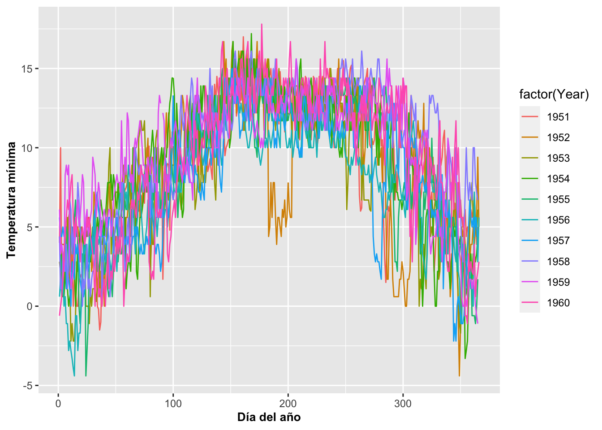
Como podemos apreciar en la Figura las líneas que representan las fechas son muy difíciles de analizar debido al solapamiento. Ahora utilizamos facet_wrap para que aparezcan separadas por la categoría de año, Year. Note la tilde en facet_wrap, ~, antes del nombre de la variable categórica, Year.
ggplot(MM, aes(x=diaanual, y=Tmin, color=factor(Year)))+
geom_line()+
facet_wrap(~Year)+
theme(legend.position="none")+
theme(axis.title=element_text(size=10,face="bold"))+
xlab("Día del año")+
ylab("Temperatura mínima")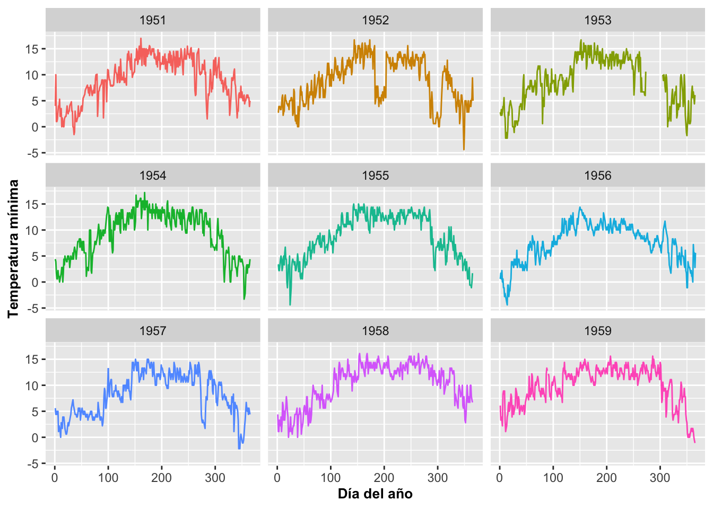
Por omisión, los gráficos van a la horizontal primero (de izquierda a derecha) y luego hacia abajo. Si se desea que bajen a la vertical primero (de arriba para abajo) y luego a la izquierda, se usa la opción dir. De esa manera, se puede notar que ahora se llena la primera columna, después la segunda y luego la tercera columna, y así sucesivamente. Para lograr ese efecto se utilizó la opción dir=v en la función facet_wrap, v de vertical; o sea, que baje a la vertical primero.
ggplot(MM, aes(x=diaanual, y=Tmin, color=factor(Year)))+
geom_line()+
facet_wrap(~Year, dir="v")+
theme(legend.position="none")+
labs(y="Temperatura mínima", x="Día del año")+
theme(axis.title=element_text(size=10,face="bold"))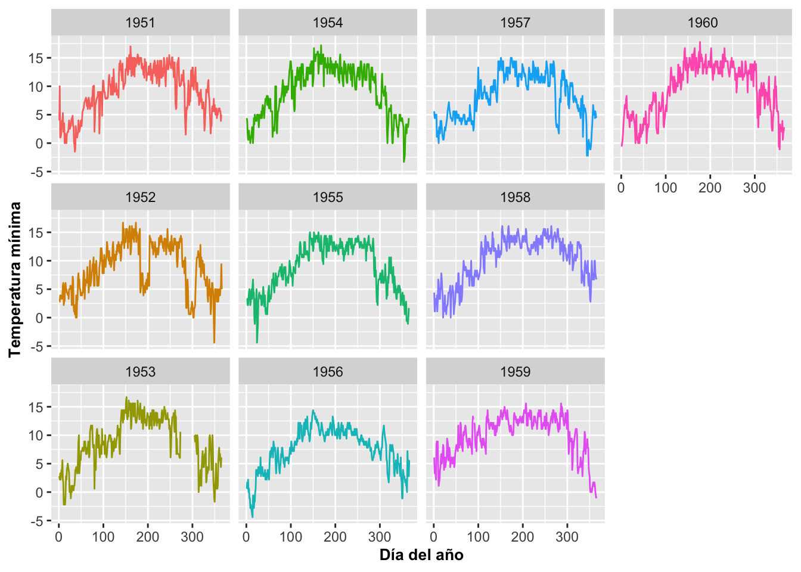
## Year Mes Temp_Prom_Max Temp_Prom_Min Fecha
## 1 1948 6 22.2 9.9 1948-06
## 2 1948 7 25.5 14.2 1948-07
## 3 1948 8 24.9 14.2 1948-08
## 4 1948 9 21.6 8.4 1948-09
## 5 1948 10 12.0 2.6 1948-10
## 6 1948 11 10.3 1.9 1948-11ASBESTOS_QUEBEC$day1=c(1)# añadir una columna con el dia 1 de cada mes
ASBESTOS_QUEBEC$day1=as.integer(ASBESTOS_QUEBEC$day1) # convert to integer
head(ASBESTOS_QUEBEC)## Year Mes Temp_Prom_Max Temp_Prom_Min Fecha day1
## 1 1948 6 22.2 9.9 1948-06 1
## 2 1948 7 25.5 14.2 1948-07 1
## 3 1948 8 24.9 14.2 1948-08 1
## 4 1948 9 21.6 8.4 1948-09 1
## 5 1948 10 12.0 2.6 1948-10 1
## 6 1948 11 10.3 1.9 1948-11 1Tenemos que unir las columnas Year, Mes y day1 en una en formato de date. Note que se usa la función ymd para year/month/day, si lo queremos formateado en day/month/year, se usaria dmy. En otro módulos estaremos hablando del paquete lubridate exclusivamente.
La segunda parte es convertir estas fechas en el día del año, o sea del primer día al ultimo día del año (1-365 o 366).
library(lubridate)
ASBESTOS_QUEBEC$fecha <- with(ASBESTOS_QUEBEC, ymd(sprintf('%04d%02d%02d', Year, Mes, day1)))
head(ASBESTOS_QUEBEC) # note que ahora que la columna "fecha" se reconoce como una "date" y no un número## Year Mes Temp_Prom_Max Temp_Prom_Min Fecha day1 fecha
## 1 1948 6 22.2 9.9 1948-06 1 1948-06-01
## 2 1948 7 25.5 14.2 1948-07 1 1948-07-01
## 3 1948 8 24.9 14.2 1948-08 1 1948-08-01
## 4 1948 9 21.6 8.4 1948-09 1 1948-09-01
## 5 1948 10 12.0 2.6 1948-10 1 1948-10-01
## 6 1948 11 10.3 1.9 1948-11 1 1948-11-01ASBESTOS_QUEBEC$diaanual=yday(ASBESTOS_QUEBEC$fecha) # Este es para convertir las fechas del año consecutivos, de 1 al 365.
tail(ASBESTOS_QUEBEC)## Year Mes Temp_Prom_Max Temp_Prom_Min Fecha day1 fecha diaanual
## 461 1986 10 10.5 2.7 1986-10 1 1986-10-01 274
## 462 1986 11 2.2 -5.7 1986-11 1 1986-11-01 305
## 463 1986 12 NA NA 1986-12 1 1986-12-01 335
## 464 1987 1 NA NA 1987-01 1 1987-01-01 1
## 465 1987 2 -7.8 -18.6 1987-02 1 1987-02-01 32
## 466 1987 3 3.3 -6.4 1987-03 1 1987-03-01 60ggplot(el archivo de datos, aes(la variable continua))
facet_wrap(\(\sim\) a + b, scales, nrow, ncol, switch, drop, dir)
facet: \(\sim\) a + b o se puede usar un vector c(a + b)
scales: usar free si se quiere que las escalas sean determinadas por los gráficos individualmente o que todos los gráficos tengan la misma escala
nrow: la cantidad de filas
ncol: la cantidad de columnas
switch: presenta la identificación de la categoría abajo cuando se usa X, y a la izquierda cuando se usa Y
drop: añadir drop = FALSE para que muestre también las variables que no tienen información
dir: dirección h para horizontal y v vertical h es la dirección predeterminada